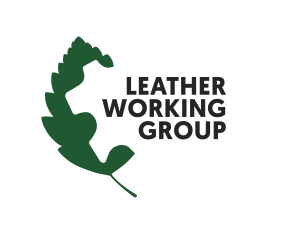

<!DOCTYPE html>
<html lang="en">
<head>
    <meta charset="UTF-8">
    <meta name="viewport" content="width=device-width, initial-scale=1.0">
    <title>Randa Accessories - Training 101</title>

    <!-- Tailwind CSS -->
    <script src="https://cdn.tailwindcss.com"></script>

    <!-- Babel for JSX -->
    <script src="https://unpkg.com/@babel/standalone/babel.min.js"></script>

    <!-- Google Fonts -->
    <link href="https://fonts.googleapis.com/css2?family=Playfair+Display:ital,wght@0,400;0,600;0,700;1,400&family=Inter:wght@400;500;600&display=swap" rel="stylesheet">

    <style>
        body { font-family: 'Inter', sans-serif; }
        h1, h2, h3, h4, h5, h6, .font-serif { font-family: 'Playfair Display', serif; }
        html { scroll-behavior: smooth; }

        ::-webkit-scrollbar { width: 8px; }
        ::-webkit-scrollbar-track { background: #FDFCFB; }
        ::-webkit-scrollbar-thumb { background: #E5E5E5; border-radius: 4px; }
        ::-webkit-scrollbar-thumb:hover { background: #D4D4D4; }

        /* Print Styles */
        @media print {
            .no-print { display: none !important; }
            nav { display: none !important; }
            .fixed { position: static !important; }
            body { background: white !important; }
            * { animation: none !important; transition: none !important; box-shadow: none !important; }
            header { padding-top: 2rem !important; }
            section { page-break-inside: avoid; }
        }
    </style>
</head>
<body class="bg-[#FDFCFB] text-stone-900 antialiased selection:bg-amber-100 selection:text-amber-900">

    <div id="root"></div>

    <script type="text/babel" data-type="module">
        import React, { useState, useEffect, useMemo } from 'https://esm.sh/react@18.2.0?dev';
        import { createRoot } from 'https://esm.sh/react-dom@18.2.0/client?dev';
        import {
            Menu, X, Layers, Droplet, Leaf, Scissors, ZoomIn, CheckCircle,
            AlertCircle, Search, ArrowUpRight, Ruler, Globe, Tag, Image as ImageIcon,
            CreditCard, CircleDashed, Layout, PenTool, Scale, Stamp,
            ArrowUp, Shield, Printer, Wifi, Award
        } from 'https://esm.sh/lucide-react@0.292.0?deps=react@18.2.0';

        /* -------------------------------------------------------------
           ERROR BOUNDARY
           ------------------------------------------------------------- */
        class ErrorBoundary extends React.Component {
            constructor(props) { super(props); this.state = { hasError: false }; }
            static getDerivedStateFromError() { return { hasError: true }; }
            render() {
                if (this.state.hasError) {
                    return (
                        <div className="min-h-screen flex items-center justify-center p-12 text-center">
                            <div>
                                <h2 className="text-2xl font-serif text-stone-900 mb-4">Something went wrong</h2>
                                <p className="text-stone-500 mb-6">Please refresh the page to continue.</p>
                                <button onClick={() => window.location.reload()} className="px-6 py-3 bg-stone-900 text-white rounded-full text-sm font-medium">Refresh Page</button>
                            </div>
                        </div>
                    );
                }
                return this.props.children;
            }
        }

        /* -------------------------------------------------------------
           SHARED COMPONENTS
           ------------------------------------------------------------- */
        const SectionHeading = ({ children, subtitle, centered = false }) => (
          <div className={`mb-12 ${centered ? 'text-center' : ''}`}>
            <h2 className="text-4xl md:text-5xl font-serif text-stone-900 mb-6 leading-tight">{children}</h2>
            {subtitle && <p className={`text-xl text-stone-600 max-w-3xl leading-relaxed ${centered ? 'mx-auto' : ''}`}>{subtitle}</p>}
          </div>
        );

        const Card = ({ children, className = "", noPadding = false }) => (
          <div className={`rounded-3xl transition-all duration-300 ${noPadding ? '' : 'p-8'} ${className}`}>
            {children}
          </div>
        );

        const AssetImage = ({ src, alt, className = "h-64" }) => {
          const [error, setError] = useState(false);
          if (error) {
            return (
              <div className={`w-full ${className} bg-stone-100 border-2 border-dashed border-stone-300 rounded-2xl flex flex-col items-center justify-center text-stone-400 gap-3`}>
                <ImageIcon size={32} />
                <span className="font-mono text-xs uppercase tracking-widest text-center px-4">Missing: {src.split('/').pop()}</span>
              </div>
            );
          }
          return (
             setError(true)} />
          );
        };

        /* Zoomable Image — pop-out on hover using fixed-position overlay */
        const ZoomableImage = ({ src, alt, containerClass = "h-32 w-full", objectFit = "cover" }) => {
          const [hovered, setHovered] = useState(false);
          const [overlayStyle, setOverlayStyle] = useState({});
          const [hasError, setHasError] = useState(false);
          const ref = React.useRef(null);

          const handleEnter = () => {
            if (ref.current) {
              const r = ref.current.getBoundingClientRect();
              const zw = r.width * 2;
              const zh = r.height * 2;
              const left = Math.max(8, Math.min(window.innerWidth - zw - 8, r.left - r.width / 2));
              const top = Math.max(8, Math.min(window.innerHeight - zh - 8, r.top - r.height / 2));
              setOverlayStyle({ position: 'fixed', left, top, width: zw, height: zh, zIndex: 9999, pointerEvents: 'none' });
            }
            setHovered(true);
          };

          if (hasError) {
            return (
              <div className={`${containerClass} bg-stone-100 border-2 border-dashed border-stone-300 rounded-2xl flex flex-col items-center justify-center text-stone-400 gap-2 cursor-zoom-in`}>
                <ImageIcon size={24} />
                <span className="font-mono text-xs uppercase tracking-widest text-center px-2">{src.split('/').pop()}</span>
              </div>
            );
          }

          return (
            <div ref={ref} className={`${containerClass} rounded-2xl overflow-hidden cursor-zoom-in relative`}
              onMouseEnter={handleEnter} onMouseLeave={() => setHovered(false)}>
               setHasError(true)} />
              {hovered && (
                <div style={overlayStyle} className="rounded-2xl shadow-2xl overflow-hidden border-2 border-white bg-white">
                  
                </div>
              )}
            </div>
          );
        };

        /* Jump navigation — links within a module */
        const JumpNav = ({ links }) => (
          <div className="flex gap-2 flex-wrap mb-12 pb-4 border-b border-stone-100 no-print overflow-x-auto">
            {links.map((link, i) => (
              <button key={i}
                onClick={() => document.getElementById(link.id)?.scrollIntoView({ behavior: 'smooth', block: 'start' })}
                className="px-4 py-1.5 rounded-full text-xs font-medium bg-stone-100 text-stone-600 hover:bg-stone-900 hover:text-white transition-all whitespace-nowrap shrink-0">
                {link.label}
              </button>
            ))}
          </div>
        );

        /* -------------------------------------------------------------
           GLOBAL SEARCH OVERLAY
           ------------------------------------------------------------- */
        const GlobalSearchOverlay = ({ onClose }) => {
            const [query, setQuery] = useState('');

            const results = useMemo(() => {
                if (!query.trim()) return [];
                const q = query.toLowerCase();
                const lr = leatherGlossary.filter(i => i.term.toLowerCase().includes(q) || i.def.toLowerCase().includes(q)).map(i => ({ ...i, category: 'Leather' }));
                const br = beltGlossary.filter(i => i.term.toLowerCase().includes(q) || i.def.toLowerCase().includes(q)).map(i => ({ ...i, category: 'Belt' }));
                const wr = walletGlossary.filter(i => i.term.toLowerCase().includes(q) || i.def.toLowerCase().includes(q)).map(i => ({ ...i, category: 'Wallet' }));
                return [...lr, ...br, ...wr];
            }, [query]);

            useEffect(() => {
                const handleKey = (e) => { if (e.key === 'Escape') onClose(); };
                window.addEventListener('keydown', handleKey);
                return () => window.removeEventListener('keydown', handleKey);
            }, [onClose]);

            return (
                <div className="fixed inset-0 z-[100] bg-black/50 backdrop-blur-sm flex items-start justify-center pt-20 px-4 no-print" onClick={onClose}>
                    <div className="bg-white rounded-3xl w-full max-w-2xl shadow-2xl overflow-hidden" onClick={e => e.stopPropagation()}>
                        <div className="p-6 border-b border-stone-100">
                            <div className="relative">
                                <Search className="absolute left-4 top-3.5 text-stone-400" size={20} />
                                <input autoFocus type="text" placeholder="Search all glossaries — Leather, Belt, Wallet..."
                                    value={query} onChange={e => setQuery(e.target.value)}
                                    className="w-full bg-stone-50 border border-stone-200 rounded-full py-3 pl-12 pr-6 text-stone-900 focus:outline-none focus:border-stone-400 transition-colors" />
                            </div>
                        </div>
                        <div className="max-h-[55vh] overflow-y-auto p-6 space-y-3">
                            {!query && <p className="text-center text-stone-400 italic py-8">Start typing to search across all glossaries...</p>}
                            {query && results.length === 0 && <p className="text-center text-stone-400 italic py-8">No results found for "{query}"</p>}
                            {results.map((item, i) => (
                                <div key={i} className="flex items-start gap-4 p-3 rounded-xl hover:bg-stone-50">
                                    <span className={`text-xs font-bold px-2 py-1 rounded-full shrink-0 mt-0.5 ${item.category === 'Leather' ? 'bg-amber-100 text-amber-800' : item.category === 'Belt' ? 'bg-blue-100 text-blue-800' : 'bg-emerald-100 text-emerald-800'}`}>
                                        {item.category}
                                    </span>
                                    <div>
                                        <h4 className="font-bold text-stone-900 text-sm">{item.term}</h4>
                                        <p className="text-xs text-stone-500 mt-1 leading-relaxed">{item.def}</p>
                                    </div>
                                </div>
                            ))}
                        </div>
                        <div className="p-4 border-t border-stone-100 text-center">
                            <button onClick={onClose} className="text-xs text-stone-400 hover:text-stone-600">Press ESC to close</button>
                        </div>
                    </div>
                </div>
            );
        };

        /* -------------------------------------------------------------
           DATA: LEATHER 101
           ------------------------------------------------------------- */
        const leatherTypes = [
            { title: "Full-Grain", description: "The highest quality. Retains the tightly-knit natural grain layer. Boasts incredible tear strength even when skived thin. Yields to movement and develops a rich patina over time.", tag: "Premium", bg: "bg-[#F5F0E6]", accent: "text-amber-900" },
            { title: "Top-Grain / Corrected", description: "The natural surface is buffed to remove flaws, then coated or embossed for a completely uniform look. Retains some grain strength but loses breathability and the ability to patina.", tag: "Standard", bg: "bg-[#E8F1F2]", accent: "text-slate-800" },
            { title: "Split", description: "The lower 'Corium' layer separated via a splitting machine. Lacks the tight fiber structure of the grain. Often heavily PU-coated or embossed to mimic top-grain, but can peel over time.", tag: "Budget", bg: "bg-[#EFEFEF]", accent: "text-stone-600" },
            { title: "Suede", description: "Created from the split (inner) layers of the hide and buffed to create a soft, velvet-like napped texture. Lightweight, flexible, and visually striking, though more vulnerable to moisture.", tag: "Textured", bg: "bg-[#F0EBE5]", accent: "text-stone-500" },
            { title: "PU / Synthetic", description: "100% synthetic (Polyurethane). Offers excellent consistency, high cutting yield, stretchability, and an accessible price point. However, it lacks the breathability, durability, and natural longevity of real leather.", tag: "Synthetic", bg: "bg-[#F5F5F5]", accent: "text-stone-400" },
            { title: "Bonded", description: "Leather scraps bonded with polyurethane. High yield, low longevity.", tag: "Composite", bg: "bg-[#FAFAFA]", accent: "text-stone-400" }
        ];

        const tanningMethods = [
            { title: "Chrome Tanning", tag: "~80% of Global Production", bg: "bg-[#E8F1F2]", accent: "text-slate-800", icon: "Droplet", img: "tanning-chrome.jpg", description: "Uses chromium sulfate salts in a fast 1–2 day process. Produces soft, pliable, water-resistant leather in a wide color range. The industry standard for most consumer goods, garments, and accessories.", pros: ["Soft & supple immediately", "Consistent & uniform results", "Water & heat resistant", "Broad color range"], cons: ["Chromium waste requires management", "No patina development", "Less eco-friendly"] },
            { title: "Vegetable Tanning", tag: "Traditional & Sustainable", bg: "bg-[#F5F0E6]", accent: "text-amber-900", icon: "Leaf", img: "tanning-vegetable.jpg", description: "Uses plant-based tannins from oak, chestnut, and mimosa bark. A slow process (weeks to months) producing firm, natural-colored leather that develops a rich, unique patina. The gold standard for structured belts and heirloom goods.", pros: ["Develops a rich patina", "Biodegradable & eco-friendly", "Firms and improves with age", "Natural, breathable feel"], cons: ["Expensive & time-consuming", "Less water-resistant initially", "Limited color options"] },
            { title: "Combination / Re-tanning", tag: "Hybrid", bg: "bg-[#EFEFEF]", accent: "text-stone-600", icon: "Layers", img: "tanning-combination.jpg", description: "Starts with chrome tanning for softness and stability, then re-tanned with vegetable agents for body and firmness. Balances the best of both methods. Commonly used in premium structured belts.", pros: ["Best of both methods", "Good structure with softness", "More versatile than pure veg-tan"], cons: ["More complex process", "Higher cost than chrome-only"] },
        ];

        const leatherFinishes = [
            { title: "Aniline", description: "Dyed exclusively with soluble dyes to showcase natural texture. Extremely soft, breathable, and luxurious. Uncoated, making it highly susceptible to stains and scratches. Develops a rich patina.", tag: "Luxurious & Delicate", bg: "bg-[#F5F0E6]", accent: "text-amber-900" },
            { title: "Semi-Aniline", description: "Coated with a light protective layer and slight pigment. Balances natural appearance with enhanced durability and uniform color. A great middle-ground for everyday items.", tag: "Balanced Durability", bg: "bg-[#E8F1F2]", accent: "text-slate-800" },
            { title: "Pigmented", description: "Sprayed with a heavy pigment coating for a uniform appearance, completely hiding natural markings. Maximum resistance to stains and scratches, but feels stiffer and less breathable.", tag: "Maximum Protection", bg: "bg-[#EFEFEF]", accent: "text-stone-600" }
        ];

        const leatherCare = [
            { title: "Conditioning", icon: "Droplet", bg: "bg-[#F5F0E6]", tips: ["Apply a quality leather conditioner every 3–6 months", "Use small circular motions with a soft cloth", "Avoid petroleum-based or silicone products on aniline leather", "Allow to absorb naturally — never dry near direct heat"] },
            { title: "Cleaning", icon: "Scissors", bg: "bg-[#E8F1F2]", tips: ["Wipe lightly soiled areas with a barely damp cloth", "Use a pH-balanced leather cleaner for stains", "Never soak or saturate leather with water", "Always test any product on a hidden area first"] },
            { title: "Storage", icon: "Layers", bg: "bg-[#EFEFEF]", tips: ["Store in a cool, dry space away from direct sunlight", "Stuff bags and wallets with tissue to hold shape", "Use breathable dust bags — never airtight plastic", "Avoid storing belts tightly rolled for extended periods"] },
            { title: "Patina & Aging", icon: "Leaf", bg: "bg-[#F0EBE5]", tips: ["On full-grain & veg-tan leather, patina is a feature, not a flaw", "Light buffing with a dry cloth brings out natural luster", "Minor surface scratches on full-grain can often be buffed out", "Aniline leather will darken beautifully with oils and handling"] },
        ];

        const lwgRatings = [
            { tier: "Gold", score: "85%+", bg: "bg-amber-50", border: "border-amber-200", accent: "text-amber-800", badgeBg: "bg-amber-400", desc: "The highest achievable rating. Awarded to tanneries demonstrating best-in-class environmental management, full traceability, and consistent compliance across every audit category. Recognized globally as the benchmark for responsible leather sourcing." },
            { tier: "Silver", score: "72–84%", bg: "bg-slate-50", border: "border-slate-200", accent: "text-slate-700", badgeBg: "bg-slate-400", desc: "Strong environmental performance with robust processes in place. Minor gaps remain but the tannery demonstrates a clear commitment to responsible practices and a credible path toward Gold." },
            { tier: "Bronze", score: "56–71%", bg: "bg-orange-50", border: "border-orange-200", accent: "text-orange-800", badgeBg: "bg-orange-400", desc: "Entry-level certification. The tannery meets baseline environmental standards and has committed to the LWG framework, with meaningful room to improve across audit categories." },
            { tier: "Audited", score: "< 56%", bg: "bg-stone-50", border: "border-stone-200", accent: "text-stone-500", badgeBg: "bg-stone-300", desc: "Completed the LWG audit but did not achieve a scored rating. Indicates transparency and engagement with the framework — a starting point for improvement, not a disqualification." },
        ];

        const lwgCriteria = [
            { title: "Environmental Compliance", icon: "Scale", detail: "Wastewater treatment, effluent quality, air emissions, and noise pollution must meet or exceed local and international regulatory standards." },
            { title: "Water Management", icon: "Droplet", detail: "Water consumption is measured and benchmarked throughout the tanning process. Tanneries must demonstrate reduction strategies against industry norms." },
            { title: "Energy & Carbon Footprint", icon: "Leaf", detail: "Energy use is tracked and tanneries are encouraged to adopt renewables and document greenhouse gas reduction efforts." },
            { title: "Chemical Management", icon: "Shield", detail: "Strict controls on restricted substances. All chemicals must be documented and harmful substances (azo dyes, heavy metals, formaldehyde) eliminated or minimized." },
            { title: "Waste Management", icon: "Layers", detail: "Solid waste — trimmings, sludge, packaging — must be tracked, reduced, and disposed of responsibly. Recycling and upcycling initiatives improve the score." },
            { title: "Traceability", icon: "Globe", detail: "The supply chain from livestock to finished leather must be fully documented. Tanneries must verify and disclose the source of every hide used in production." },
        ];

        const lwgWhy = [
            { title: "Brand Requirements", detail: "Major brands including Nike, Adidas, H&M, Timberland, and PVH Corp. require LWG-certified leather from their suppliers. Certification opens the door to these partnerships." },
            { title: "Consumer Demand", detail: "Today's buyers actively seek sustainably sourced products. LWG certification provides third-party verified proof of responsible sourcing that resonates with modern shoppers." },
            { title: "ESG & Regulatory Pressure", detail: "Companies face growing pressure from investors and regulators to demonstrate environmental responsibility throughout their supply chains. LWG data directly supports ESG reporting." },
            { title: "Supply Chain Confidence", detail: "Traceability requirements give brands and designers confidence that the leather they source meets ethical and environmental standards from hide to finished good." },
        ];

        const leatherGlossary = [
            { term: "Altered / Corrected Grain", def: "Leather that has had the original surface removed and a new grain embossed." },
            { term: "American Bison", def: "Stronger than traditional steer hide, supple and durable, with uncorrected natural grain." },
            { term: "Aniline Dyeing", def: "Dyeing process where soluble dyes penetrate the hide without producing a uniform surface topcoat. Retains the natural surface, softest feel, and highest breathability, but lacks stain resistance." },
            { term: "Antique Distressed", def: "Leather treated to age the appearance to give it a vintage look." },
            { term: "Bark Tanning", def: "Vegetable-tanning mainly by means of tannins from the bark of trees." },
            { term: "Belly", def: "The underside and upper part of the legs; thinnest and loosest part of the hide." },
            { term: "Belting Leather", def: "Heavyweight, full-grain leather originally for pulley belts. Extremely strong and stiff." },
            { term: "Blue Split", def: "Split layer treated with chromium, giving it a bluish color." },
            { term: "Boardy Leather", def: "Leather which is stiff or not pliable." },
            { term: "Bonded Leather", def: "Reconstituted leather made from scraps/fibers glued together. Non-elastic and tends to crack." },
            { term: "Bovine Splits", def: "Another term for split leather from cow hides; the weaker layer remaining after the top grain is peeled away." },
            { term: "Box Calf", def: "Chrome-tanned calfskin. Smooth, firm, with a fine grain. Common in high-end shoes and bags." },
            { term: "Breathability", def: "Characteristic of full-grain leather to adjust to temperature and wick moisture." },
            { term: "Bridle", def: "Firm, rich-colored leather with enough oils to withstand weather. Ideal for tack items." },
            { term: "Brushed Grain", def: "Leather brushed to create a soft nap or fuzzy texture (suede or nubuck)." },
            { term: "Buffalo Leather", def: "Similar to cowhide, but often thicker and with a more pronounced grain pattern. Exceptionally durable and develops a rugged character over time." },
            { term: "Buffing", def: "Sanding the top grain layer via an abrasive cylinder to smooth imperfections." },
            { term: "Butt", def: "The part of the hide after bellies and shoulders are removed; thickest and strongest." },
            { term: "Bycast Leather", def: "Split leather backing with a surface layer of polyurethane (PU)." },
            { term: "Calf Hide", def: "Skin of a young bovine. Fine grain, smooth, lightweight (4-6 sq ft)." },
            { term: "Chamois Leather", def: "Porous leather, very soft and flexible, usually tanned with oils." },
            { term: "Chrome Tanned", def: "Tanned with chromium salts. Produces strong, soft, pliable leather." },
            { term: "Combination Tanned", def: "Tanned with two or more agents (e.g., chromium and vegetable). Also known as Re-tanned." },
            { term: "Cordovan", def: "Leather from the tight, firm shell portion of horse butts." },
            { term: "Corium", def: "The thickest middle layer of the hide with an open, disorganized fiber structure. It acts as a cushion but has less tear strength than the grain." },
            { term: "Cowhide", def: "Unsplit cowhide. The most widely used leather (30-45 sq ft)." },
            { term: "Crocking / Crock", def: "Transfer of color or finish from leather to other materials by rubbing." },
            { term: "Crust", def: "Leather that has been tanned, dyed, and dried, but not finished with oils/treatments." },
            { term: "Curried Leather", def: "Vegetable-tanned leather dressed with oils and greases for strength and flexibility." },
            { term: "Degrained Leather", def: "Leather that has had its grain removed after tanning." },
            { term: "Distressed Leather", def: "Tanned to exhibit an aged, vintage look." },
            { term: "Draw", def: "Shrunken, shriveled, or wrinkled grain surface." },
            { term: "Drum Dyeing", def: "Tumbling hides in a drum with dyes for full penetration (struck through)." },
            { term: "Embossed Leather", def: "Leather printed with a raised pattern via heat and pressure." },
            { term: "Enhanced Grain", def: "Lightly buffed leather embossed to simulate an attractive grain." },
            { term: "Exotic Leather", def: "Unusual animal/reptile skins (lizard, snake, crocodile)." },
            { term: "Fat Wrinkle", def: "Marks forming in the grain from fat deposits; a sign of uncorrected natural leather." },
            { term: "Finish", def: "Steps after dyeing (rolling, spraying, waxing, glazing) to add resistance or color." },
            { term: "Flesh Layer", def: "The innermost layer of the hide facing the animal, characterized by a fairly tight structure of fibers." },
            { term: "Flesh Side", def: "The inner side of a hide or skin." },
            { term: "Full Grain", def: "Outside original skin with hair removed but otherwise uncorrected. The highest quality." },
            { term: "Full Hand / Round Hand", def: "Leather which is full-bodied and robust." },
            { term: "Garment Weight", def: "Thin, supple leather (1-3oz) suitable for sewing into clothing." },
            { term: "Glazed / Hand Glazed", def: "Surface polished to a high luster using glass on steel rollers." },
            { term: "Goatskin", def: "Soft, resilient, natural pebbled grain. Slightly thicker than lamb." },
            { term: "Grain", def: "The pattern characterized by pores on the outer surface." },
            { term: "Gum Tragacanth", def: "Natural gum-based edge slicking and burnishing compound." },
            { term: "Hand", def: "Term that describes leather softness and feel." },
            { term: "Hand Antiqued", def: "Hand-rubbing contrasting color onto the surface to accentuate grain." },
            { term: "Hide", def: "The outer covering of a mature or fully grown large mammal." },
            { term: "Horse Leather", def: "Durable, abrasion-resistant. Often used for gloves or razor strops." },
            { term: "Imitation Leather", def: "Synthetic material that looks or feels like leather." },
            { term: "Kidskin", def: "Leather made from the skin of a young goat." },
            { term: "Liming", def: "Process of removing hair from rawhide using chemicals." },
            { term: "Milling", def: "Tumbling tanned hides in drums with heat/water to soften hand or enhance grain." },
            { term: "Naked Leather", def: "Leather without treatment/finish to alter its natural state (other than dye)." },
            { term: "Nap", def: "Napped finish created by removing the natural grain layer." },
            { term: "Nappa", def: "Soft full-grain clothing/gloving leather from sheep, lamb, or kidskin." },
            { term: "Nubuck", def: "Cattle hide buffed on the top grain to produce a subtle nap/matte look." },
            { term: "Oak Tanning", def: "Tannage with vegetable extracts (originally oak bark)." },
            { term: "Patent Leather", def: "Glossy finish giving a shiny, lustrous, mirror-like surface." },
            { term: "Patina", def: "Surface luster that develops on pure anilines/nubucks over time." },
            { term: "Pearlized Leather", def: "Leather with a sheen or pearl-like luster." },
            { term: "Pebble Grain", def: "Leather embossed with a textured, pebbled pattern." },
            { term: "Pigmented Leather", def: "Finished with a solid heavy pigment coating. Most durable, low-maintenance, and stain-resistant type of leather, though it is less breathable and hides natural markings." },
            { term: "Plating", def: "Using a hot metal plate to press leather under high pressure to cover imperfections." },
            { term: "Pull-up Leather", def: "Base dye layered with oils. When folded, oils displace, revealing lighter areas." },
            { term: "Pure Aniline", def: "Aniline dyed with no additional coloring, showing all natural markings." },
            { term: "Rawhide", def: "Hide treated only to preserve it prior to tanning." },
            { term: "Saffiano", def: "A cross-hatch embossed leather pattern known for its scratch resistance and easy-clean surface. Widely used in structured accessories and luxury goods." },
            { term: "Saddle Leather", def: "Firm, full-grain, vegetable-tanned leather originally made for equestrian equipment. Dense, durable, and develops excellent structure with use." },
            { term: "Semi-Aniline", def: "Leather dyed with soluble dyes and given a light protective topcoat. Balances natural appearance with enhanced stain and wear resistance." },
            { term: "Shrunken Grain", def: "Leather treated in warm water after tanning to produce a naturally crinkled, pebbled surface appearance." },
            { term: "Skiving", def: "The process of thinning leather by shaving material from the flesh side to reduce bulk at edges and seams for cleaner, flatter construction." },
            { term: "Sole Leather", def: "Heavy, firm, vegetable-tanned leather primarily used for shoe soles. Extremely dense fiber structure." },
            { term: "Splitting", def: "The industrial process of separating a thick hide into layers (grain layer and split/corium layer) using a band knife splitting machine." },
            { term: "Tanning", def: "The overall process of converting raw animal hides into stable, durable leather through chemical or natural means to prevent decomposition." },
            { term: "Temper", def: "The degree of moisture content and pliability in leather at any given stage of production." },
            { term: "Top Coat / Top Finish", def: "The final protective layer applied over dyed leather, providing color uniformity, sheen, and resistance to staining or abrasion." },
            { term: "Vachetta", def: "Untreated, vegetable-tanned leather used for trim and handles on luxury goods. Honey-colored when new, darkens to a rich tan patina with UV and oil exposure." },
            { term: "Vegetable Tanned", def: "Leather tanned using natural plant-based tannins (oak, chestnut, mimosa). Firm, eco-friendly, and develops a unique patina over time." },
            { term: "Waxed Leather", def: "Leather saturated with natural waxes that visibly displace when bent or scratched, revealing lighter areas. Emphasizes a rugged, lived-in character." },
            { term: "Waterproofing", def: "A topical treatment (wax, silicone, or spray) applied to leather to repel moisture. May slightly alter texture and surface sheen." }
        ];

        /* -------------------------------------------------------------
           DATA: BELT 101
           ------------------------------------------------------------- */
        const beltAnatomy = [
            { num: 1,  part: "Tip",             desc: "The end of the belt strap opposite the buckle. Can be pointed (dress/English), blunt, or tapered depending on style and formality." },
            { num: 2,  part: "Edge",            desc: "The outer perimeter of the strap, finished in various ways — cut round, feather, drop, or domed — to define the belt's formality and character." },
            { num: 3,  part: "Feather Edge",    desc: "A specific edge treatment where the leather tapers down very thinly to blend seamlessly into the surface — a hallmark of refined, dress-quality construction." },
            { num: 4,  part: "Lining",          desc: "The underside of the belt strap, often made of a different material (twill, poly, or split leather) for added comfort, stability, and durability." },
            { num: 5,  part: "Holes",           desc: "Punched openings along the strap that accept the buckle prong. Standard belts have 5 holes spaced 1 inch apart; 7-hole belts offer extended adjustability." },
            { num: 6,  part: "Harness",         desc: "The buckle frame assembly — typically a rectangular or D-shaped frame that anchors the prong and attaches to the strap via a folded turnback." },
            { num: 7,  part: "Prong / Prong Seat", desc: "The metal pin on the buckle that passes through a hole to secure the belt. The prong seat is the inner nose area of the frame where the prong rests when fastened." },
            { num: 8,  part: "Bar Tack",        desc: "A dense, reinforced stitch bar sewn across the strap where the buckle and keeper attach — distributing stress and preventing tearing at high-tension points." },
            { num: 9,  part: "Loop / Keeper",   desc: "A small loop of leather or fabric that holds down the free end of the belt after it passes through the buckle, keeping excess strap neat and in place." },
            { num: 10, part: "Ornament / Rivet", desc: "Decorative hardware — a metal emblem, logo plate, or rivet — applied to the strap surface. Can be both aesthetic and functional, securing layers together." },
            { num: 11, part: "Tab",             desc: "The folded return of the strap leather that wraps back around the buckle bar, securing the hardware to the belt body. Sometimes called the turnback." },
            { num: 12, part: "Strap",           desc: "The main body of the belt — the long, continuous strip of leather, synthetic, or fabric material that wraps around the waist." },
            { num: 13, part: "Edge Stitching",  desc: "A line of stitching running parallel and close to the edge of the strap. Provides structural reinforcement and signals construction quality." },
        ];

        const beltEdges = [
            { name: "Cut Round Edge", desc: "A slightly rounded cut for a better edge feel. Casual.", img: "edge-cut.jpg", bg: "bg-stone-50" },
            { name: "Feather Edge", desc: "Rounded, blends into surface. Refined.", img: "edge-feather.jpg", bg: "bg-stone-100" },
            { name: "Drop Edge", desc: "Distinct step-down ridge. Structural.", img: "edge-drop.jpg", bg: "bg-stone-50" },
            { name: "Domed", desc: "Pronounced curve. Dressy.", img: "edge-domed.jpg", bg: "bg-stone-100" },
        ];

        const beltStitches = [
            { type: "Casual", spi: "5-6 SPI", thread: "Heavy Weight", img: "stitch-casual.jpg" },
            { type: "Dress Casual", spi: "7-8 SPI", thread: "Medium Weight", img: "stitch-refined.jpg" },
            { type: "Dress", spi: "9-10 SPI", thread: "Light Weight", img: "stitch-dress.jpg" },
        ];

        const beltBuckles = [
            { name: "Harness",    img: "buckle-harness.jpg",     desc: "Classic rectangular or D-shaped frame with a center prong. The most versatile and widely used buckle style." },
            { name: "Center Bar", img: "buckle-center-bar.jpg",  desc: "A crossbar spans the center of the frame where the prong mounts, giving it a clean, tailored silhouette." },
            { name: "Plaque",     img: "buckle-plaque.jpg",      desc: "A solid front plate, often logo-forward, with a hidden prong that attaches from the back of the frame." },
            { name: "Reversible", img: "buckle-reversible.jpg",  desc: "A swivel center post lets the strap rotate, enabling two-tone or two-sided belt designs from a single strap." },
            { name: "Track Lock", img: "buckle-track-lock.jpg",  desc: "Ratchet-style with teeth instead of holes for micro-adjustable, tool-free fit — no punched holes required." },
            { name: "Compression",img: "buckle-compression.jpg", desc: "Grip-based closure that clamps the strap without a prong. Common in tactical, outdoor, and sport belts." },
        ];

        const beltTipShapes = [
            { name: "English Tip", img: "tip-english.jpg", desc: "A classic V-shaped pointed tip with a slight notch cut from the center. Traditional and versatile — common in dress and premium casual belts." },
            { name: "Dress Tip",   img: "tip-dress.jpg",   desc: "A clean, symmetric pointed tip with gentle tapered curves. Refined and formal — the standard tip for dress belts." },
            { name: "Blunt Tip",   img: "tip-blunt.jpg",   desc: "A flat, squared-off end. Modern and casual in character, often seen on western, canvas, and contemporary-style belts." },
        ];

        const beltGlossary = [
            { term: "Arms (Buckle)", def: "The side parts of the buckle frame." },
            { term: "Bar Tack", def: "A dense, reinforced stitch bar sewn across the strap where the buckle and keeper attach, distributing stress and preventing tearing at high-tension points." },
            { term: "Bartack", def: "A reinforced stitch used to secure the buckle and keeper." },
            { term: "Beveled Edge", def: "An edge that is angled or sloped rather than cut straight at 90 degrees." },
            { term: "Blunt Tip", def: "A belt tip with a squared-off, flat end. Modern and casual in character." },
            { term: "Center Bar Buckle", def: "A buckle featuring a central crossbar where the prong is mounted." },
            { term: "Cut Round Edge", def: "A slightly rounded cut on the outer perimeter of the strap for a better edge feel." },
            { term: "Dress Tip", def: "A clean, symmetric pointed tip with gentle tapered curves — the standard for dress belts." },
            { term: "Drop Edge", def: "A structural edge with a distinct step-down ridge." },
            { term: "Edge", def: "The outer perimeter of the belt strap. The edge finish — cut round, feather, drop, or domed — is a primary indicator of a belt's quality and formality level." },
            { term: "Edge Stitching", def: "A line of stitching running parallel and close to the edge of the strap, providing structural reinforcement and signaling construction quality." },
            { term: "English Tip", def: "A traditional V-shaped pointed tip with a slight notch cut from the center. Classic and versatile." },
            { term: "Feather Edge", def: "An edge that tapers down to a thin point, blending seamlessly into the surface — a hallmark of refined, dress-quality construction." },
            { term: "Filler", def: "Material placed between the top layer and lining to add thickness, shape, or padding (e.g., Soft Bond, EVA)." },
            { term: "Harness Buckle", def: "A classic buckle featuring a frame (often D-shaped or square) with a center prong." },
            { term: "Holes", def: "Punched openings along the strap that accept the buckle prong. Standard belts have 5 holes spaced 1 inch apart; 7-hole belts extend adjustability." },
            { term: "Keeper", def: "A loop that holds the free end of the belt after it's fastened." },
            { term: "Lining", def: "The underside of the belt strap, often made of a different material for comfort, durability, or style." },
            { term: "Loop", def: "See Keeper — a loop (sometimes a separate sewn ring) that holds the free end of the strap in place after fastening." },
            { term: "Nose", def: "The front part of the buckle frame where the prong rests." },
            { term: "Ornament / Rivet", def: "Decorative or functional hardware — a metal emblem, logo plate, or rivet — applied to the strap surface." },
            { term: "Plaque Buckle", def: "A solid, plate-style front buckle, often featuring a logo, where the peg/prong attaches from behind." },
            { term: "Prong", def: "The metal pin on a buckle that goes through the belt holes to secure it." },
            { term: "Prong Seat", def: "The inner nose area of the buckle frame where the prong rests when the belt is fastened." },
            { term: "Ratchet / Track Lock Buckle", def: "A buckle with a mechanism for precise adjustments without traditional holes." },
            { term: "Reversible Belt", def: "A belt constructed to be worn with either side facing out, often utilizing a swivel buckle." },
            { term: "Single Layer (Bridle)", def: "A belt construction using a single thick piece of material, very rugged and durable." },
            { term: "SPI (Stitches Per Inch)", def: "The number of stitches in one linear inch of seam. Higher SPI indicates finer thread and a more formal, dress-quality construction." },
            { term: "Split & Recombined", def: "A construction where two layers are thinned and glued together, often to allow for a domed shape." },
            { term: "Strap", def: "The main body of the belt — the long strip of leather, synthetic, or fabric that wraps around the waist." },
            { term: "Stretch Elastic / Webbing", def: "Strong, woven or elastic fabrics used in belt construction for versatility and comfort." },
            { term: "Tab", def: "The folded return of the strap leather that wraps around the buckle bar, securing hardware to the belt body. Sometimes called the turnback." },
            { term: "Tapered Tip", def: "A belt tip that gradually narrows down towards the end." },
            { term: "Tip", def: "The end of the belt strap opposite the buckle. Tip shape (English, Dress, Blunt) contributes to overall style and formality." },
            { term: "Trapunto", def: "A quilting technique that creates a raised, padded pattern on the leather." },
            { term: "Turnback", def: "The folded portion of the strap that wraps around the buckle to secure it." }
        ];

        /* -------------------------------------------------------------
           DATA: WALLET 101
           ------------------------------------------------------------- */
        const walletSilhouettes = [
            { name: "Billfold / Slimfold", desc: "Classic design, folds in half. Balances capacity and slimness.", img: "sil-bifold.jpg" },
            { name: "Passcase", desc: "A billfold featuring a removable or integrated flap with an ID window (X-Capacity).", img: "sil-passcase.jpg" },
            { name: "Tri-fold", desc: "Folds twice into thirds. Offers more capacity but can be bulkier in the pocket.", img: "sil-trifold.jpg" },
            { name: "Front Pocket (FPW)", desc: "Minimalist design intended for front pocket carry. Often includes a money clip or built-in magnet.", img: "sil-front-pocket.jpg" },
            { name: "Cardcase", desc: "Ultra-slim profile designed strictly for holding a few essential cards.", img: "sil-cardcase.jpg" },
            { name: "Specialty Construction", desc: "Purpose-built wallets ranging from ultra-slim minimalists to large-capacity organizers.", img: "sil-organizer.jpg" },
        ];

        const walletConstruction = [
            { title: "Turned Edge", desc: "Material is folded over and stitched. Clean, durable, and dressy.", img: "const-turned-edge.jpg" },
            { title: "Cut Edge", desc: "Raw edge exposed, often painted or burnished. Casual and rugged.", img: "const-wallet-cut-edge.jpg" },
            { title: "French Edge", desc: "Folded edges from both sides meet and are stitched for a highly refined look.", img: "const-french-edge.jpg" },
            { title: "Binding", desc: "A separate material is wrapped around the raw edge and stitched for durability.", img: "const-binding.jpg" }
        ];

        const rfidInfo = [
            { q: "What is RFID / NFC?", a: "Radio Frequency Identification — a wireless technology that stores and transmits data via radio waves. Contactless credit cards, debit cards, and US passports all contain embedded RFID/NFC chips that allow tap-to-pay transactions." },
            { q: "What is RFID Skimming?", a: "A form of electronic theft where a criminal uses a concealed scanner to remotely read card data from RFID-enabled cards in a wallet or pocket — without any physical contact. The card never leaves the victim's possession." },
            { q: "How Does RFID Blocking Work?", a: "A thin metallic lining (usually aluminum or copper mesh) woven into the wallet's interior creates a Faraday cage — a barrier that absorbs and reflects the radio frequency signals, preventing unauthorized scanners from reading card data." },
            { q: "Which Cards Have RFID?", a: "Most contactless credit and debit cards issued after 2015 (look for the wave symbol ))) on the card face). Also: US Passports (since 2007), Global Entry / NEXUS cards, many transit cards, and some hotel key cards." },
        ];

        const walletGlossary = [
            { term: "Bill Compartment", def: "The area for storing cash, typically a long pocket that runs the width of the wallet. Can be single or double (divided)." },
            { term: "Blind Emboss", def: "A logo or design pressed into the leather without the use of foil or color — subtle and elegant." },
            { term: "Card Slots", def: "Compartments designed to hold credit cards, debit cards, and IDs. Can be horizontal or vertical." },
            { term: "Cover", def: "The outer panel of the wallet — the primary surface that defines the visual identity, grain texture, and brand impression." },
            { term: "Cover Stitching", def: "External stitching that runs along the perimeter of the wallet cover, securing the layers and serving as a key visual design detail." },
            { term: "Debossing", def: "A technique that indents a design into the material." },
            { term: "Edge", def: "The finished outer perimeter of the wallet. Edge treatment (turned, cut, painted, or burnished) signals construction quality and formality." },
            { term: "Edge Crease", def: "A decorative heated line pressed along the edge of a card slot or wallet border." },
            { term: "Embossed Logo", def: "The brand mark pressed into the leather surface — typically applied to the interior panel as a blind emboss for a refined, understated look." },
            { term: "Embossing", def: "A technique that raises a design from the surface of the material using heat and pressure dies." },
            { term: "Extra Capacity", def: "Additional card slots, gusseted pockets, or expandable compartments that increase storage beyond a standard configuration." },
            { term: "ID Window", def: "A clear pocket, often using mesh or plastic, for displaying identification." },
            { term: "Interior Stay", def: "A reinforced center panel inside the bill compartment that provides structure and prevents the wallet from distorting with use." },
            { term: "Lining", def: "The interior material (twill, poly twill, chambray, denim) that protects contents and adds structure." },
            { term: "Ornament", def: "A decorative hardware element — typically a metal logo plate, rivet, or emblem — applied to the exterior for branding and style." },
            { term: "Passcase", def: "A flap, often removable, containing an ID window. Adds capacity to a standard billfold." },
            { term: "Perforation (Perf)", def: "A design technique using small punched holes for visual texture or breathability." },
            { term: "Pocket", def: "An open-ended flat or gusseted compartment for receipts, business cards, or small folded items beyond the structured card slots." },
            { term: "RFID Protection", def: "Hidden metallic lining (Faraday cage) that blocks radio frequency signals to prevent electronic card skimming." },
            { term: "Spine", def: "The folded center edge that connects the front and back covers, allowing the wallet to open and fold flat." },
            { term: "Stay", def: "The center spine of the wallet's interior, often reinforced for added durability and structure." },
            { term: "Turned Edge", def: "A construction technique where the raw leather edge is folded over and stitched flat, creating a clean, durable, and refined finish on the wallet perimeter." }
        ];

        /* -------------------------------------------------------------
           INTERACTIVE HIDE DIAGRAM
           ------------------------------------------------------------- */
        const InteractiveHideDiagram = () => {
            const [activepart, setActivePart] = useState(null);

            const parts = [
                { id: 'side', num: '1', title: "Side", desc: "Half of a whole hide divided along the backbone. Best balance of yield.", color: "bg-purple-500", defaultFill: "fill-purple-500/20", hoverFill: "fill-purple-500/60" },
                { id: 'shoulder', num: '2', title: "Shoulder / Square", desc: "Neck/Upper Back. Strong, wrinkles visible. Most belts are made from here.", color: "bg-blue-500", defaultFill: "fill-blue-500/20", hoverFill: "fill-blue-500/60" },
                { id: 'crop', num: '3', title: "Crop Area", desc: "Premium section excluding bellies. High quality yield.", color: "bg-indigo-500", defaultFill: "fill-indigo-500/20", hoverFill: "fill-indigo-500/60" },
                { id: 'butt', num: '4', title: "Bend / Butt", desc: "Rear. Thickest, tightest fibers. The absolute premium cut for structural items.", color: "bg-emerald-500", defaultFill: "fill-emerald-500/20", hoverFill: "fill-emerald-500/60" },
                { id: 'belly', num: '5', title: "Belly", desc: "Underside. Stretchy, loose fibers. Used for linings or bags.", color: "bg-orange-500", defaultFill: "fill-orange-500/20", hoverFill: "fill-orange-500/60" }
            ];

            const handleToggle = (id) => setActivePart(prev => prev === id ? null : id);

            return (
                <div className="bg-white rounded-3xl p-8 md:p-12 border border-stone-100 shadow-sm flex flex-col md:flex-row items-center gap-12 w-full">
                    <div className="relative w-full max-w-md aspect-square flex items-center justify-center">
                        <svg viewBox="0 0 200 200" className="w-full h-full drop-shadow-xl" role="img" aria-label="Interactive hide anatomy diagram">
                            <defs>
                                <clipPath id="hide-clip">
                                    <path d="M50,20 C60,10 80,10 90,20 C95,25 105,25 110,20 C120,10 140,10 150,20 C160,30 180,40 180,70 C180,90 170,100 175,120 C180,140 190,170 160,180 C140,185 130,170 100,175 C70,170 60,185 40,180 C10,170 20,140 25,120 C30,100 20,90 20,70 C20,40 40,30 50,20 Z" />
                                </clipPath>
                            </defs>

                            <path d="M50,20 C60,10 80,10 90,20 C95,25 105,25 110,20 C120,10 140,10 150,20 C160,30 180,40 180,70 C180,90 170,100 175,120 C180,140 190,170 160,180 C140,185 130,170 100,175 C70,170 60,185 40,180 C10,170 20,140 25,120 C30,100 20,90 20,70 C20,40 40,30 50,20 Z"
                                  className="fill-[#F5F0E6] stroke-stone-300 stroke-2" />

                            <g clipPath="url(#hide-clip)">
                                {/* Belly */}
                                <g className={`transition-all duration-300 cursor-pointer ${activepart === 'belly' || !activepart ? 'opacity-100' : 'opacity-30'}`}
                                   onClick={() => handleToggle('belly')} onMouseEnter={() => setActivePart('belly')} onMouseLeave={() => setActivePart(null)}>
                                    <rect x="0" y="0" width="200" height="200" className={activepart === 'belly' ? parts[4].hoverFill : parts[4].defaultFill} />
                                    <rect x="0" y="0" width="200" height="70" className="fill-[#F5F0E6]" />
                                    <rect x="40" y="70" width="120" height="130" className="fill-[#F5F0E6]" />
                                </g>
                                {/* Side */}
                                <rect x="100" y="0" width="100" height="200" tabIndex={0} role="button" aria-label="Side — half of a whole hide"
                                      className={`transition-all duration-300 cursor-pointer ${activepart === 'side' ? parts[0].hoverFill : (!activepart ? parts[0].defaultFill : 'fill-transparent')}`}
                                      onClick={() => handleToggle('side')} onMouseEnter={() => setActivePart('side')} onMouseLeave={() => setActivePart(null)} />
                                {/* Shoulder */}
                                <rect x="0" y="0" width="200" height="70" tabIndex={0} role="button" aria-label="Shoulder — neck and upper back area"
                                      className={`transition-all duration-300 cursor-pointer ${activepart === 'shoulder' ? parts[1].hoverFill : (!activepart ? parts[1].defaultFill : 'fill-transparent')}`}
                                      onClick={() => handleToggle('shoulder')} onMouseEnter={() => setActivePart('shoulder')} onMouseLeave={() => setActivePart(null)} />
                                {/* Butt */}
                                <rect x="40" y="70" width="120" height="130" tabIndex={0} role="button" aria-label="Bend / Butt — thickest, tightest fibers"
                                      className={`transition-all duration-300 cursor-pointer ${activepart === 'butt' ? parts[3].hoverFill : (!activepart ? parts[3].defaultFill : 'fill-transparent')}`}
                                      onClick={() => handleToggle('butt')} onMouseEnter={() => setActivePart('butt')} onMouseLeave={() => setActivePart(null)} />
                                {/* Crop */}
                                <rect x="100" y="0" width="60" height="200" tabIndex={0} role="button" aria-label="Crop — premium section"
                                      className={`transition-all duration-300 cursor-pointer ${activepart === 'crop' ? parts[2].hoverFill : (!activepart ? parts[2].defaultFill : 'fill-transparent')}`}
                                      onClick={() => handleToggle('crop')} onMouseEnter={() => setActivePart('crop')} onMouseLeave={() => setActivePart(null)} />
                            </g>

                            {/* Region number labels */}
                            <g clipPath="url(#hide-clip)" className="pointer-events-none">
                                <text x="155" y="100" textAnchor="middle" className="fill-purple-700" fontSize="11" fontWeight="bold">①</text>
                                <text x="100" y="38" textAnchor="middle" className="fill-blue-700" fontSize="11" fontWeight="bold">②</text>
                                <text x="128" y="130" textAnchor="middle" className="fill-indigo-700" fontSize="11" fontWeight="bold">③</text>
                                <text x="80" y="130" textAnchor="middle" className="fill-emerald-700" fontSize="11" fontWeight="bold">④</text>
                                <text x="30" y="165" textAnchor="middle" className="fill-orange-700" fontSize="11" fontWeight="bold">⑤</text>
                            </g>
                        </svg>
                    </div>
                    <div className="flex-1 space-y-4">
                        {parts.map((part) => (
                            <div
                                key={part.id}
                                className={`p-4 rounded-xl border transition-all duration-200 cursor-pointer flex items-start gap-4 ${activepart === part.id ? 'bg-stone-50 border-stone-300 shadow-md scale-[1.02]' : 'bg-transparent border-stone-100 hover:bg-stone-50'}`}
                                onClick={() => handleToggle(part.id)}
                                onMouseEnter={() => setActivePart(part.id)}
                                onMouseLeave={() => setActivePart(null)}
                                tabIndex={0}
                                onKeyDown={(e) => { if (e.key === 'Enter' || e.key === ' ') handleToggle(part.id); }}
                                role="button"
                                aria-pressed={activepart === part.id}
                            >
                                <div className="flex items-center gap-2 mt-1 shrink-0">
                                    <span className="text-xs font-bold text-stone-400">{part.num}</span>
                                    <div className={`w-3 h-3 rounded-full ${part.color}`} />
                                </div>
                                <div>
                                    <h4 className="font-bold text-stone-900">{part.title}</h4>
                                    <p className="text-stone-500 text-sm mt-1">{part.desc}</p>
                                </div>
                            </div>
                        ))}
                        <p className="text-xs text-stone-400 mt-2 italic">Hover or tap each region to highlight it on the diagram.</p>
                    </div>
                </div>
            );
        };

        /* -------------------------------------------------------------
           LEATHER MODULE
           ------------------------------------------------------------- */
        const LeatherModule = React.memo(() => {
            const [searchTerm, setSearchTerm] = useState('');
            const filteredGlossary = useMemo(() => leatherGlossary.filter(item =>
                item.term.toLowerCase().includes(searchTerm.toLowerCase()) ||
                item.def.toLowerCase().includes(searchTerm.toLowerCase())
            ), [searchTerm]);

            const leatherLinks = [
                { id: 'leather-intro', label: 'What is Leather?' },
                { id: 'leather-layers', label: 'Hide Layers' },
                { id: 'leather-processing', label: 'Processing Journey' },
                { id: 'leather-grades', label: 'Grades & Types' },
                { id: 'leather-tanning', label: 'Tanning Methods' },
                { id: 'leather-finishes', label: 'Finishes' },
                { id: 'leather-specs', label: 'Manufacturing Specs' },
                { id: 'leather-anatomy', label: 'Hide Anatomy' },
                { id: 'leather-care', label: 'Care & Maintenance' },
                { id: 'leather-lwg', label: 'LWG Certification' },
                { id: 'leather-glossary', label: 'Glossary' },
            ];

            const iconMap = { Droplet, Layers, Leaf, Scissors, Scale, Globe, Shield };

            return (
                <div className="space-y-32 animate-in fade-in duration-500">
                    <JumpNav links={leatherLinks} />

                    <section id="leather-intro">
                        <SectionHeading subtitle="Leather is a natural, durable material created through the tanning of animal hides.">What is Leather?</SectionHeading>
                        <div className="grid md:grid-cols-2 gap-8">
                            <AssetImage src="images/leather-hero-collage.jpg" alt="Collage" className="h-80" />
                            <Card className="bg-[#F5F0E6] border-none flex flex-col justify-center">
                                <h3 className="text-2xl font-serif text-stone-900 mb-4">Why it's Special</h3>
                                <p className="text-stone-600 leading-relaxed mb-4">Unlike synthetics, leather breathes, stretches, and heals. Imperfections (like fat wrinkles or healed scars) are evidence of natural origin, not flaws.</p>
                                <p className="text-stone-600 leading-relaxed">It develops a unique <strong>patina</strong> over time, ensuring pieces age beautifully and last generations.</p>
                            </Card>
                        </div>
                    </section>

                    <section id="leather-layers">
                        <SectionHeading subtitle="Understanding the layers of the skin and the modern splitting process.">Hide Layers & Splitting</SectionHeading>
                        <div className="grid md:grid-cols-3 gap-6 mb-8">
                            <Card className="bg-[#F9F8F6] border-stone-200">
                                <h4 className="font-serif font-bold text-xl text-stone-900 mb-2">1. The Grain</h4>
                                <p className="text-stone-600 text-sm leading-relaxed">The outermost layer carrying the hair follicles. Its tightly knit fibers protect against abrasions and elements. It forms the highly resilient surface of <strong>Full-Grain</strong> leather.</p>
                            </Card>
                            <Card className="bg-[#F9F8F6] border-stone-200">
                                <h4 className="font-serif font-bold text-xl text-stone-900 mb-2">2. The Corium</h4>
                                <p className="text-stone-600 text-sm leading-relaxed">The thickest middle layer. It has a more disorganized, open fiber structure that acts as a cushion. When separated by a machine, this layer becomes <strong>Split Leather</strong>.</p>
                            </Card>
                            <Card className="bg-[#F9F8F6] border-stone-200">
                                <h4 className="font-serif font-bold text-xl text-stone-900 mb-2">3. The Flesh</h4>
                                <p className="text-stone-600 text-sm leading-relaxed">The innermost layer facing the animal's body. It has a tighter fiber structure than the corium, providing a strong inner skin.</p>
                            </Card>
                        </div>
                        <div className="bg-white rounded-3xl border border-stone-100 shadow-sm overflow-hidden">
                            <div className="p-6 pb-0 flex justify-center">
                                <div className="w-3/4">
                                    <AssetImage
                                        src="images/leather-layers-diagram.jpg"
                                        alt="Cross-section diagram showing the Grain, Corium, and Flesh layers of a hide and how splitting produces Full-Grain, Top-Grain, and Suede leather"
                                        className="object-contain rounded-2xl"
                                    />
                                </div>
                            </div>
                            <div className="px-8 py-5 border-t border-stone-100 bg-stone-50 mt-6">
                                <p className="text-xs text-stone-500 leading-relaxed">
                                    <strong className="text-stone-700">Layer Diagram:</strong> A cross-section of a hide showing how the Grain, Corium, and Flesh layers relate to finished leather grades — Full-Grain retains the entire grain layer intact; Top-Grain is buffed and corrected; Suede is produced from the split inner surface of the Corium.
                                </p>
                            </div>
                        </div>
                    </section>

                    <section id="leather-processing">
                        <SectionHeading subtitle="Every piece of leather travels through a precise sequence of chemical and mechanical transformations — from a fresh animal hide to a finished, beautiful material.">
                            From Raw Hide to Finished Leather
                        </SectionHeading>

                        {/* Phase overview cards */}
                        <div className="grid sm:grid-cols-3 gap-4 mb-16">
                            {[
                                { num: "Steps 01–05", phase: "Beamhouse", desc: "Hair removal, cleaning & splitting", bg: "bg-[#E8F1F2]", text: "text-slate-700", border: "border-slate-200" },
                                { num: "Steps 06–08", phase: "Tanning", desc: "Core fiber stabilization", bg: "bg-[#F5F0E6]", text: "text-amber-800", border: "border-amber-200" },
                                { num: "Steps 09–14", phase: "Post-Tanning & Finishing", desc: "Dyeing, softening & surface work", bg: "bg-emerald-50", text: "text-emerald-800", border: "border-emerald-200" },
                            ].map((p, i) => (
                                <div key={i} className={`${p.bg} rounded-3xl p-6 border ${p.border}`}>
                                    <p className={`text-xs font-bold uppercase tracking-wider ${p.text} mb-2`}>{p.num}</p>
                                    <h4 className={`text-xl font-serif ${p.text} mb-1`}>{p.phase}</h4>
                                    <p className="text-xs text-stone-500">{p.desc}</p>
                                </div>
                            ))}
                        </div>

                        {/* Phase 1: Beamhouse */}
                        <div className="mb-16">
                            <div className="flex items-center gap-4 mb-8">
                                <span className="text-xs font-bold uppercase px-4 py-2 rounded-full bg-[#E8F1F2] text-slate-700 whitespace-nowrap">Phase 1 — Beamhouse</span>
                                <div className="flex-1 h-px bg-stone-200"></div>
                                <span className="text-xs text-stone-400 whitespace-nowrap">Steps 01–05</span>
                            </div>
                            <div className="grid sm:grid-cols-2 md:grid-cols-3 lg:grid-cols-5 gap-4">
                                {[
                                    {
                                        num: "01", title: "Curing",
                                        desc: "Hides are packed in salt immediately after slaughter to halt bacterial decay during transit to the tannery.",
                                        icon: (<svg viewBox="0 0 56 56" fill="none" className="w-10 h-10 text-slate-600"><rect x="12" y="18" width="32" height="28" rx="6" fill="currentColor" fillOpacity="0.15" stroke="currentColor" strokeWidth="1.5"/><path d="M20 18 C20 11 36 11 36 18" stroke="currentColor" strokeWidth="2" fill="none" strokeLinecap="round"/><circle cx="22" cy="28" r="2.5" fill="currentColor" fillOpacity="0.5"/><circle cx="28" cy="25" r="2.5" fill="currentColor" fillOpacity="0.5"/><circle cx="34" cy="28" r="2.5" fill="currentColor" fillOpacity="0.5"/><circle cx="25" cy="35" r="2.5" fill="currentColor" fillOpacity="0.5"/><circle cx="31" cy="36" r="2.5" fill="currentColor" fillOpacity="0.5"/></svg>),
                                        bg: "bg-stone-50"
                                    },
                                    {
                                        num: "02", title: "Soaking",
                                        desc: "Cured hides are submerged in fresh water baths to rehydrate and clean them, restoring their natural suppleness.",
                                        icon: (<svg viewBox="0 0 56 56" fill="none" className="w-10 h-10 text-blue-500"><rect x="8" y="30" width="40" height="18" rx="5" fill="currentColor" fillOpacity="0.15" stroke="currentColor" strokeWidth="1.5"/><path d="M10 38 Q19 33 28 38 Q37 43 46 38" stroke="currentColor" strokeWidth="2.5" strokeLinecap="round" fill="none"/><rect x="21" y="10" width="14" height="22" rx="3" fill="currentColor" fillOpacity="0.25" stroke="currentColor" strokeWidth="1.5"/></svg>),
                                        bg: "bg-blue-50"
                                    },
                                    {
                                        num: "03", title: "Liming",
                                        desc: "A lime solution removes hair and swells the hide's fiber structure, preparing it to fully accept tanning agents.",
                                        icon: (<svg viewBox="0 0 56 56" fill="none" className="w-10 h-10 text-slate-500"><rect x="14" y="10" width="28" height="36" rx="6" fill="currentColor" fillOpacity="0.1" stroke="currentColor" strokeWidth="1.5"/><circle cx="22" cy="26" r="3.5" fill="currentColor" fillOpacity="0.35"/><circle cx="28" cy="21" r="3" fill="currentColor" fillOpacity="0.3"/><circle cx="34" cy="27" r="3.5" fill="currentColor" fillOpacity="0.35"/><circle cx="25" cy="33" r="3" fill="currentColor" fillOpacity="0.3"/><circle cx="31" cy="36" r="3.5" fill="currentColor" fillOpacity="0.3"/><path d="M14 19 Q28 15 42 19" stroke="currentColor" strokeWidth="1.5" strokeLinecap="round" fill="none" strokeDasharray="2 2"/></svg>),
                                        bg: "bg-stone-50"
                                    },
                                    {
                                        num: "04", title: "Fleshing",
                                        desc: "Mechanical rollers scrape fat, muscle, and connective tissue from the flesh side to create a clean, uniform surface.",
                                        icon: (<svg viewBox="0 0 56 56" fill="none" className="w-10 h-10 text-slate-600"><circle cx="16" cy="28" r="10" fill="none" stroke="currentColor" strokeWidth="2"/><circle cx="40" cy="28" r="10" fill="none" stroke="currentColor" strokeWidth="2"/><circle cx="16" cy="28" r="3" fill="currentColor" fillOpacity="0.25"/><circle cx="40" cy="28" r="3" fill="currentColor" fillOpacity="0.25"/><rect x="6" y="23" width="44" height="10" rx="2" fill="currentColor" fillOpacity="0.08"/><path d="M26 19 L30 19 L32 28 L24 28 Z" fill="currentColor" fillOpacity="0.4"/></svg>),
                                        bg: "bg-stone-50"
                                    },
                                    {
                                        num: "05", title: "Splitting",
                                        desc: "A band knife machine slices the hide into the tight grain layer (top) and the looser split layer (bottom).",
                                        icon: (<svg viewBox="0 0 56 56" fill="none" className="w-10 h-10 text-amber-700"><rect x="6" y="12" width="44" height="12" rx="3" fill="currentColor" fillOpacity="0.3" stroke="currentColor" strokeWidth="1.5"/><path d="M4 30 L52 30" stroke="currentColor" strokeWidth="2.5" strokeLinecap="round" strokeDasharray="3 2"/><rect x="6" y="33" width="44" height="11" rx="3" fill="currentColor" fillOpacity="0.15" stroke="currentColor" strokeWidth="1.5"/><path d="M44 27 L50 30 L44 33" fill="currentColor" fillOpacity="0.6"/></svg>),
                                        bg: "bg-amber-50"
                                    },
                                ].map((step, i, arr) => (
                                    <div key={i} className="relative">
                                        <div className={`${step.bg} rounded-2xl p-5 h-full flex flex-col border border-stone-100 hover:shadow-md transition-all`}>
                                            <div className="flex items-start justify-between mb-4">
                                                <span className="text-xs font-bold font-mono text-stone-400">{step.num}</span>
                                                {step.icon}
                                            </div>
                                            <h4 className="font-serif font-bold text-stone-900 mb-2 text-base">{step.title}</h4>
                                            <p className="text-xs text-stone-500 leading-relaxed flex-1">{step.desc}</p>
                                        </div>
                                        {i < arr.length - 1 && (
                                            <div className="hidden lg:flex absolute -right-2.5 top-1/2 -translate-y-1/2 w-5 h-5 bg-white rounded-full border border-stone-200 items-center justify-center z-10 text-stone-400 text-xs">›</div>
                                        )}
                                    </div>
                                ))}
                            </div>
                        </div>

                        {/* Phase 2: Tanning */}
                        <div className="mb-16">
                            <div className="flex items-center gap-4 mb-8">
                                <span className="text-xs font-bold uppercase px-4 py-2 rounded-full bg-[#F5F0E6] text-amber-800 whitespace-nowrap">Phase 2 — Tanning</span>
                                <div className="flex-1 h-px bg-stone-200"></div>
                                <span className="text-xs text-stone-400 whitespace-nowrap">Steps 06–08</span>
                            </div>
                            <div className="grid sm:grid-cols-3 gap-4">
                                {[
                                    {
                                        num: "06", title: "Pickling",
                                        desc: "Hides are treated in a salt and acid bath to lower the pH and prepare the fiber structure to bond with tanning agents.",
                                        icon: (<svg viewBox="0 0 56 56" fill="none" className="w-10 h-10 text-amber-700"><path d="M18 10 L38 10 L42 46 Q40 50 28 50 Q16 50 14 46 Z" fill="currentColor" fillOpacity="0.12" stroke="currentColor" strokeWidth="1.5"/><rect x="14" y="8" width="28" height="5" rx="2.5" fill="currentColor" fillOpacity="0.3"/><path d="M17 28 Q28 24 39 28" stroke="currentColor" strokeWidth="2" strokeLinecap="round" fill="none"/><path d="M16 36 Q28 32 40 36" stroke="currentColor" strokeWidth="2" strokeLinecap="round" fill="none"/></svg>),
                                        bg: "bg-[#F5F0E6]"
                                    },
                                    {
                                        num: "07", title: "Tanning",
                                        desc: "Hides rotate in large drums with tanning agents — chromium salts (1–2 days) or vegetable tannins (weeks to months) — permanently stabilizing the collagen fibers.",
                                        icon: (<svg viewBox="0 0 56 56" fill="none" className="w-10 h-10 text-amber-800"><circle cx="28" cy="28" r="18" fill="currentColor" fillOpacity="0.1" stroke="currentColor" strokeWidth="2"/><circle cx="28" cy="28" r="5" fill="currentColor" fillOpacity="0.3" stroke="currentColor" strokeWidth="1.5"/><path d="M28 10 L28 18" stroke="currentColor" strokeWidth="2.5" strokeLinecap="round"/><path d="M28 38 L28 46" stroke="currentColor" strokeWidth="2.5" strokeLinecap="round"/><path d="M10 28 L18 28" stroke="currentColor" strokeWidth="2.5" strokeLinecap="round"/><path d="M38 28 L46 28" stroke="currentColor" strokeWidth="2.5" strokeLinecap="round"/><path d="M14.7 14.7 L20.5 20.5" stroke="currentColor" strokeWidth="2" strokeLinecap="round"/><path d="M35.5 35.5 L41.3 41.3" stroke="currentColor" strokeWidth="2" strokeLinecap="round"/></svg>),
                                        bg: "bg-amber-50"
                                    },
                                    {
                                        num: "08", title: "Basification",
                                        desc: "For chrome-tanned leather, the pH is raised to fix chrome molecules permanently within the collagen, producing 'wet blue' — a tanned but unfinished hide.",
                                        icon: (<svg viewBox="0 0 56 56" fill="none" className="w-10 h-10 text-amber-700"><rect x="10" y="32" width="36" height="16" rx="4" fill="currentColor" fillOpacity="0.12" stroke="currentColor" strokeWidth="1.5"/><path d="M28 28 L28 10" stroke="currentColor" strokeWidth="2.5" strokeLinecap="round"/><path d="M22 16 L28 8 L34 16" stroke="currentColor" strokeWidth="2.5" strokeLinecap="round" strokeLinejoin="round" fill="none"/><path d="M18 36 L22 44 M26 36 L26 44 M34 36 L30 44 M42 36 L38 44" stroke="currentColor" strokeWidth="1.5" strokeLinecap="round" strokeOpacity="0.4"/></svg>),
                                        bg: "bg-[#F5F0E6]"
                                    },
                                ].map((step, i, arr) => (
                                    <div key={i} className="relative">
                                        <div className={`${step.bg} rounded-2xl p-6 h-full flex flex-col border border-stone-100 hover:shadow-md transition-all`}>
                                            <div className="flex items-start justify-between mb-4">
                                                <span className="text-xs font-bold font-mono text-stone-400">{step.num}</span>
                                                {step.icon}
                                            </div>
                                            <h4 className="font-serif font-bold text-stone-900 mb-2 text-base">{step.title}</h4>
                                            <p className="text-xs text-stone-500 leading-relaxed flex-1">{step.desc}</p>
                                        </div>
                                        {i < arr.length - 1 && (
                                            <div className="hidden sm:flex absolute -right-2.5 top-1/2 -translate-y-1/2 w-5 h-5 bg-white rounded-full border border-stone-200 items-center justify-center z-10 text-stone-400 text-xs">›</div>
                                        )}
                                    </div>
                                ))}
                            </div>
                        </div>

                        {/* Phase 3: Post-Tanning & Finishing */}
                        <div className="mb-12">
                            <div className="flex items-center gap-4 mb-8">
                                <span className="text-xs font-bold uppercase px-4 py-2 rounded-full bg-emerald-100 text-emerald-800 whitespace-nowrap">Phase 3 — Post-Tanning &amp; Finishing</span>
                                <div className="flex-1 h-px bg-stone-200"></div>
                                <span className="text-xs text-stone-400 whitespace-nowrap">Steps 09–14</span>
                            </div>
                            <div className="grid sm:grid-cols-2 md:grid-cols-3 gap-4">
                                {[
                                    {
                                        num: "09", title: "Retanning & Dyeing",
                                        desc: "Additional tanning agents build body and character. Aniline, semi-aniline, or pigment dyes are driven into the fibers for consistent color, from natural tans to deep black.",
                                        icon: (<svg viewBox="0 0 56 56" fill="none" className="w-10 h-10 text-emerald-700"><circle cx="28" cy="30" r="16" fill="currentColor" fillOpacity="0.08" stroke="currentColor" strokeWidth="1.5"/><circle cx="22" cy="25" r="5.5" fill="#7C3AED" fillOpacity="0.3"/><circle cx="34" cy="25" r="5.5" fill="#D97706" fillOpacity="0.3"/><circle cx="28" cy="35" r="5.5" fill="#047857" fillOpacity="0.35"/><path d="M28 8 L28 14" stroke="currentColor" strokeWidth="2.5" strokeLinecap="round"/></svg>),
                                        bg: "bg-emerald-50"
                                    },
                                    {
                                        num: "10", title: "Fat Liquoring",
                                        desc: "Oils are emulsified and beaten into the leather to lubricate individual collagen fibers, preventing them from sticking together and directly setting the final softness.",
                                        icon: (<svg viewBox="0 0 56 56" fill="none" className="w-10 h-10 text-emerald-700"><path d="M28 8 C28 8 16 22 16 32 C16 39.7 21.4 46 28 46 C34.6 46 40 39.7 40 32 C40 22 28 8 28 8Z" fill="currentColor" fillOpacity="0.2" stroke="currentColor" strokeWidth="1.5"/><path d="M22 36 Q25 32 28 36" stroke="currentColor" strokeWidth="2" strokeLinecap="round" fill="none"/></svg>),
                                        bg: "bg-stone-50"
                                    },
                                    {
                                        num: "11", title: "Drying",
                                        desc: "Leather is dried using vacuum plates, hanging frames, or toggle drying (stretched on frames). This sets the fiber structure and surface character.",
                                        icon: (<svg viewBox="0 0 56 56" fill="none" className="w-10 h-10 text-emerald-600"><rect x="12" y="22" width="32" height="22" rx="5" fill="currentColor" fillOpacity="0.12" stroke="currentColor" strokeWidth="1.5"/><path d="M20 8 Q22 13 20 18" stroke="currentColor" strokeWidth="2.5" strokeLinecap="round" fill="none"/><path d="M28 6 Q30 12 28 18" stroke="currentColor" strokeWidth="2.5" strokeLinecap="round" fill="none"/><path d="M36 8 Q38 13 36 18" stroke="currentColor" strokeWidth="2.5" strokeLinecap="round" fill="none"/><path d="M14 36 Q20 30 28 35 Q36 40 42 36" stroke="currentColor" strokeWidth="2" strokeLinecap="round" fill="none" strokeDasharray="2 2"/></svg>),
                                        bg: "bg-emerald-50"
                                    },
                                    {
                                        num: "12", title: "Staking & Milling",
                                        desc: "Mechanical rollers (staking) or tumbling drums (milling) physically work the leather to achieve the desired softness, drape, and hand feel.",
                                        icon: (<svg viewBox="0 0 56 56" fill="none" className="w-10 h-10 text-emerald-700"><circle cx="16" cy="28" r="10" fill="none" stroke="currentColor" strokeWidth="2"/><circle cx="40" cy="28" r="10" fill="none" stroke="currentColor" strokeWidth="2"/><circle cx="16" cy="28" r="3" fill="currentColor" fillOpacity="0.3"/><circle cx="40" cy="28" r="3" fill="currentColor" fillOpacity="0.3"/><path d="M6 23 L8 23 M6 28 L8 28 M6 33 L8 33" stroke="currentColor" strokeWidth="1.5" strokeLinecap="round"/><path d="M48 23 L50 23 M48 28 L50 28 M48 33 L50 33" stroke="currentColor" strokeWidth="1.5" strokeLinecap="round"/><path d="M26 28 L30 28" stroke="currentColor" strokeWidth="1.5" strokeLinecap="round" strokeDasharray="1 1"/></svg>),
                                        bg: "bg-stone-50"
                                    },
                                    {
                                        num: "13", title: "Finishing",
                                        desc: "Surface coatings, pigments, lacquers, or waxes are applied. Embossing creates textures. This sets the final appearance, handle, and performance of the leather.",
                                        icon: (<svg viewBox="0 0 56 56" fill="none" className="w-10 h-10 text-emerald-700"><rect x="10" y="36" width="36" height="10" rx="3" fill="currentColor" fillOpacity="0.25" stroke="currentColor" strokeWidth="1.5"/><path d="M25 12 L31 12 L31 36 L25 36 Z" fill="currentColor" fillOpacity="0.3" stroke="currentColor" strokeWidth="1.5"/><path d="M21 8 L35 8 L31 14 L25 14 Z" fill="currentColor" fillOpacity="0.5"/><path d="M14 36 Q22 28 28 34 Q34 40 42 36" stroke="currentColor" strokeWidth="2" strokeLinecap="round" fill="none"/></svg>),
                                        bg: "bg-emerald-50"
                                    },
                                    {
                                        num: "14", title: "Grading & Measuring",
                                        desc: "Finished hides are inspected, graded by quality, measured by square foot, and stamped. They are now ready to be shipped to manufacturers.",
                                        icon: (<svg viewBox="0 0 56 56" fill="none" className="w-10 h-10 text-emerald-800"><rect x="10" y="10" width="36" height="36" rx="5" fill="currentColor" fillOpacity="0.1" stroke="currentColor" strokeWidth="1.5"/><path d="M19 28 L25 34 L37 21" stroke="currentColor" strokeWidth="3" strokeLinecap="round" strokeLinejoin="round" fill="none"/><path d="M10 18 L7 18 M10 28 L7 28 M10 38 L7 38" stroke="currentColor" strokeWidth="1.5" strokeLinecap="round"/></svg>),
                                        bg: "bg-stone-50"
                                    },
                                ].map((step, i, arr) => (
                                    <div key={i} className="relative">
                                        <div className={`${step.bg} rounded-2xl p-6 h-full flex flex-col border border-stone-100 hover:shadow-md transition-all`}>
                                            <div className="flex items-start justify-between mb-4">
                                                <span className="text-xs font-bold font-mono text-stone-400">{step.num}</span>
                                                {step.icon}
                                            </div>
                                            <h4 className="font-serif font-bold text-stone-900 mb-2 text-base">{step.title}</h4>
                                            <p className="text-xs text-stone-500 leading-relaxed flex-1">{step.desc}</p>
                                        </div>
                                        {i < arr.length - 1 && (
                                            <div className="hidden md:flex absolute -right-2.5 top-1/2 -translate-y-1/2 w-5 h-5 bg-white rounded-full border border-stone-200 items-center justify-center z-10 text-stone-400 text-xs">›</div>
                                        )}
                                    </div>
                                ))}
                            </div>
                        </div>

                        {/* Summary callout */}
                        <div className="bg-stone-50 rounded-3xl p-8 border border-stone-100">
                            <div className="flex items-start gap-4">
                                <div className="w-10 h-10 rounded-full bg-stone-200 flex items-center justify-center shrink-0">
                                    <Layers size={18} className="text-stone-600" />
                                </div>
                                <div>
                                    <h4 className="font-serif font-bold text-stone-900 mb-2">The Full Journey: ~2 Days to 3 Months</h4>
                                    <p className="text-sm text-stone-600 leading-relaxed">Total processing time depends on the tanning method. Chrome-tanned leather can move from raw hide to finished product in as little as 2–3 days. Vegetable-tanned leather — especially for premium structured belts — may spend weeks or months in the tanning pits before post-tanning begins. Each method produces fundamentally different materials with distinct qualities suited to different end uses.</p>
                                </div>
                            </div>
                        </div>
                    </section>

                    <section id="leather-grades">
                        <SectionHeading subtitle="Understanding grades is key to quality selection.">Grades & Types</SectionHeading>
                        <div className="grid md:grid-cols-2 lg:grid-cols-3 gap-4">
                            {leatherTypes.map((type, idx) => (
                                <Card key={idx} className={`${type.bg} border-none h-full flex flex-col hover:shadow-lg transition-all`}>
                                    <span className={`text-xs font-bold uppercase px-3 py-1 rounded-full bg-white/60 w-max mb-4 ${type.accent}`}>{type.tag}</span>
                                    <h3 className={`text-2xl font-serif ${type.accent} mb-2`}>{type.title}</h3>
                                    <p className="text-stone-600 text-sm flex-1">{type.description}</p>
                                </Card>
                            ))}
                        </div>
                        <div className="grid grid-cols-2 md:grid-cols-4 gap-4 mt-8">
                            {['full-grain', 'top-grain', 'split-suede', 'pu-synthetic'].map(img => (
                                <div key={img} className="space-y-2 text-center">
                                    <AssetImage src={`images/macro-${img}.jpg`} alt={img} className="h-40" />
                                    <span className="text-xs text-stone-500 font-bold uppercase">{img.replaceAll('-', ' ')}</span>
                                </div>
                            ))}
                        </div>
                    </section>

                    <section id="leather-tanning">
                        <SectionHeading subtitle="The tanning method determines the leather's character, durability, sustainability, and patina potential.">Tanning Methods</SectionHeading>
                        <div className="flex flex-col gap-6">
                            {tanningMethods.map((method, idx) => {
                                const IconComp = iconMap[method.icon] || Layers;
                                return (
                                    <div key={idx} className={`${method.bg} rounded-3xl overflow-hidden flex flex-col md:flex-row hover:shadow-lg transition-all`}>
                                        {/* Image slot */}
                                        <div className="md:w-64 lg:w-80 shrink-0">
                                            <AssetImage
                                                src={`images/${method.img}`}
                                                alt={method.title}
                                                className="h-56 md:h-full rounded-none"
                                            />
                                        </div>
                                        {/* Info */}
                                        <div className="flex flex-col flex-1 p-8">
                                            <div className="flex items-start justify-between mb-4">
                                                <div>
                                                    <span className={`text-xs font-bold uppercase px-3 py-1 rounded-full bg-white/60 w-max ${method.accent}`}>{method.tag}</span>
                                                    <h3 className={`text-2xl font-serif mt-3 ${method.accent}`}>{method.title}</h3>
                                                </div>
                                                <IconComp size={24} className={`${method.accent} mt-1 opacity-60 shrink-0`} />
                                            </div>
                                            <p className="text-stone-600 text-sm leading-relaxed mb-5">{method.description}</p>
                                            <div className="grid grid-cols-2 gap-4 mt-auto">
                                                <div>
                                                    <p className="text-xs font-bold text-stone-500 uppercase mb-2">Advantages</p>
                                                    <ul className="space-y-1">
                                                        {method.pros.map((pro, i) => <li key={i} className="flex gap-2 text-xs text-stone-600"><CheckCircle size={12} className="text-emerald-500 shrink-0 mt-0.5" />{pro}</li>)}
                                                    </ul>
                                                </div>
                                                <div>
                                                    <p className="text-xs font-bold text-stone-500 uppercase mb-2">Limitations</p>
                                                    <ul className="space-y-1">
                                                        {method.cons.map((con, i) => <li key={i} className="flex gap-2 text-xs text-stone-500"><AlertCircle size={12} className="text-stone-400 shrink-0 mt-0.5" />{con}</li>)}
                                                    </ul>
                                                </div>
                                            </div>
                                        </div>
                                    </div>
                                );
                            })}
                        </div>
                    </section>

                    <section id="leather-finishes">
                        <SectionHeading subtitle="The finish applied dictates a product's breathability, softness, and maintenance needs.">Leather Finishes</SectionHeading>
                        <div className="grid lg:grid-cols-3 gap-6 mb-8">
                            {leatherFinishes.map((finish, idx) => (
                                <Card key={idx} className={`${finish.bg} border-none h-full flex flex-col hover:shadow-lg transition-all`}>
                                    <span className={`text-xs font-bold uppercase px-3 py-1 rounded-full bg-white/60 w-max mb-4 ${finish.accent}`}>{finish.tag}</span>
                                    <h3 className={`text-2xl font-serif ${finish.accent} mb-2`}>{finish.title}</h3>
                                    <p className="text-stone-600 text-sm flex-1 leading-relaxed">{finish.description}</p>
                                </Card>
                            ))}
                        </div>
                    </section>

                    <section id="leather-specs">
                        <SectionHeading subtitle="Crucial metrics for production, pricing, and legal stamping.">Manufacturing Specs</SectionHeading>
                        <div className="grid lg:grid-cols-2 gap-8">
                            <div className="space-y-8">
                                <Card className="border-stone-200">
                                    <div className="flex items-center gap-3 mb-6 text-stone-900">
                                        <Scale className="text-amber-600" />
                                        <h3 className="text-2xl font-serif">Belt Cutting Yields</h3>
                                    </div>
                                    <div className="overflow-x-auto">
                                        <table className="w-full text-sm text-left">
                                            <thead className="text-xs text-stone-500 uppercase bg-stone-50">
                                                <tr><th className="px-4 py-3 rounded-tl-lg">Material</th><th className="px-4 py-3">32mm</th><th className="px-4 py-3">35mm</th><th className="px-4 py-3 rounded-tr-lg">38-40mm</th></tr>
                                            </thead>
                                            <tbody>
                                                <tr className="border-b border-stone-100"><td className="px-4 py-3 font-medium">Shoulders</td><td className="px-4 py-3">.76 - .82 sqft</td><td className="px-4 py-3">.82 - .90 sqft</td><td className="px-4 py-3">.93 - 1.02 sqft</td></tr>
                                                <tr className="border-b border-stone-100"><td className="px-4 py-3 font-medium">Double Butts</td><td className="px-4 py-3">.67 - .70 sqft</td><td className="px-4 py-3">.73 - .76 sqft</td><td className="px-4 py-3">.83 - .90 sqft</td></tr>
                                                <tr><td className="px-4 py-3 font-medium text-stone-500">PU (Top & Lining)</td><td className="px-4 py-3 text-stone-500">.08 yds*</td><td className="px-4 py-3 text-stone-500">.086 yds*</td><td className="px-4 py-3 text-stone-500">.098 yds*</td></tr>
                                            </tbody>
                                        </table>
                                        <p className="text-xs text-stone-400 mt-3">*Add 13% more to cutting yield for stretch PU materials.</p>
                                    </div>
                                </Card>

                                <Card className="border-stone-200 bg-[#F0F4F8]">
                                    <div className="flex items-center gap-3 mb-6 text-stone-900">
                                        <Ruler className="text-blue-600" />
                                        <h3 className="text-2xl font-serif">Thickness Guide</h3>
                                    </div>
                                    <ul className="space-y-3 text-sm text-stone-700">
                                        <li className="flex justify-between border-b border-blue-200/50 pb-2"><span>Raw Leather</span><span className="font-mono">1.2mm - 3.6mm</span></li>
                                        <li className="flex justify-between border-b border-blue-200/50 pb-2"><span>Finished Split</span><span className="font-mono">1.75mm - 1.85mm</span></li>
                                        <li className="flex justify-between border-b border-blue-200/50 pb-2"><span>Bonded Leather</span><span className="font-mono">1.5mm - 2.5mm</span></li>
                                        <li className="flex justify-between border-b border-blue-200/50 pb-2 font-medium pt-2"><span>Dress Belt Weight (Finished)</span><span className="font-mono text-stone-900">4.2 - 4.6mm</span></li>
                                        <li className="flex justify-between pt-1 font-medium"><span>Casual Belt Weight (Finished)</span><span className="font-mono text-stone-900">3.2 - 4.2mm</span></li>
                                    </ul>
                                </Card>
                            </div>

                            <Card className="border-stone-200 bg-stone-900 text-white flex flex-col">
                                <div className="flex items-center gap-3 mb-6">
                                    <Stamp className="text-amber-400" />
                                    <h3 className="text-2xl font-serif text-white">Stamping Guidelines</h3>
                                </div>
                                <p className="text-stone-400 text-sm mb-6">Legal and industry standards for product stamping based on the material layer.</p>
                                <div className="space-y-4 flex-1">
                                    {[
                                        { mat: "Top Grain Leather", stamp: "Leather" },
                                        { mat: "Finished Split", stamp: "Leather" },
                                        { mat: "PU Split", stamp: "Leather" },
                                        { mat: "PU on Split", stamp: "Coated Leather" },
                                        { mat: "Finished Bonded Leather", stamp: "Imitation Leather / Synthetic" },
                                        { mat: "PU on Polyester", stamp: "Imitation Leather / Synthetic" },
                                    ].map((item, i) => (
                                        <div key={i} className="flex justify-between items-center border-b border-stone-800 pb-3">
                                            <span className="text-sm font-medium text-stone-300">{item.mat}</span>
                                            <span className="text-xs bg-stone-800 px-3 py-1 rounded text-amber-400 uppercase tracking-wider">{item.stamp}</span>
                                        </div>
                                    ))}
                                </div>
                            </Card>
                        </div>
                    </section>

                    <section id="leather-anatomy">
                        <SectionHeading subtitle="Hide location determines density, stretch, and price.">Hide Anatomy</SectionHeading>
                        <InteractiveHideDiagram />
                    </section>

                    <section id="leather-care">
                        <SectionHeading subtitle="Proper care preserves quality, extends life, and enhances the leather's natural character over time.">Care & Maintenance</SectionHeading>
                        <div className="grid md:grid-cols-2 lg:grid-cols-4 gap-6">
                            {leatherCare.map((area, idx) => {
                                const IconComp = iconMap[area.icon] || Droplet;
                                return (
                                    <Card key={idx} className={`${area.bg} border-none flex flex-col`}>
                                        <div className="flex items-center gap-3 mb-5">
                                            <IconComp size={20} className="text-stone-700 shrink-0" />
                                            <h3 className="font-serif font-bold text-xl text-stone-900">{area.title}</h3>
                                        </div>
                                        <ul className="space-y-3 flex-1">
                                            {area.tips.map((tip, i) => (
                                                <li key={i} className="flex gap-2 text-sm text-stone-600 leading-snug">
                                                    <CheckCircle size={14} className="text-stone-400 shrink-0 mt-0.5" />
                                                    {tip}
                                                </li>
                                            ))}
                                        </ul>
                                    </Card>
                                );
                            })}
                        </div>
                    </section>

                    <section id="leather-lwg">
                        <SectionHeading subtitle="The Leather Working Group (LWG) is the global gold standard for responsible leather manufacturing — auditing tanneries on environmental performance, traceability, and chemical management.">LWG Certification</SectionHeading>

                        {/* Intro banner */}
                        <div className="bg-amber-50 border border-amber-200 rounded-3xl p-8 mb-8 flex flex-col md:flex-row gap-6 items-start">
                            <div className="shrink-0 w-32 bg-white rounded-2xl p-3 flex items-center justify-center shadow-sm border border-amber-100">
                                 { e.target.style.display='none'; e.target.nextSibling.style.display='flex'; }}
                                />
                                <div style={{display:'none'}} className="w-full h-20 flex flex-col items-center justify-center text-amber-400 gap-1">
                                    <Award size={28} />
                                    <span className="text-xs text-amber-600 font-semibold">LWG</span>
                                </div>
                            </div>
                            <div>
                                <h3 className="font-serif font-bold text-xl text-stone-900 mb-2">What is the Leather Working Group?</h3>
                                <p className="text-sm text-stone-600 leading-relaxed">Founded in 2005, the LWG is a non-profit multi-stakeholder organization that develops and maintains a sustainability assessment protocol for the leather industry. LWG certification has become an industry standard, with major global brands requiring it from their leather suppliers as a baseline for responsible sourcing. Tanneries are audited by independent third parties against a 600+ point scorecard covering environmental impact, traceability, and chemical compliance.</p>
                            </div>
                        </div>

                        {/* Rating Tiers */}
                        <h3 className="font-serif font-bold text-2xl text-stone-900 mb-5">Rating Tiers</h3>
                        <div className="grid md:grid-cols-2 lg:grid-cols-4 gap-5 mb-10">
                            {lwgRatings.map((r, idx) => (
                                <div key={idx} className={`${r.bg} border ${r.border} rounded-3xl p-6 flex flex-col gap-3`}>
                                    <div className="flex items-center justify-between">
                                        <span className={`text-xs font-bold uppercase tracking-widest ${r.accent}`}>{r.tier}</span>
                                        <span className={`${r.badgeBg} text-white text-xs font-bold px-3 py-1 rounded-full`}>{r.score}</span>
                                    </div>
                                    <p className="text-sm text-stone-600 leading-relaxed flex-1">{r.desc}</p>
                                </div>
                            ))}
                        </div>

                        {/* Audit Criteria */}
                        <h3 className="font-serif font-bold text-2xl text-stone-900 mb-5">What the Audit Covers</h3>
                        <div className="grid md:grid-cols-2 lg:grid-cols-3 gap-5 mb-10">
                            {lwgCriteria.map((c, idx) => {
                                const IconComp = iconMap[c.icon] || Scale;
                                return (
                                    <Card key={idx} className="bg-white border border-stone-100 shadow-sm flex flex-col gap-3">
                                        <div className="flex items-center gap-3">
                                            <div className="w-9 h-9 rounded-xl bg-stone-100 flex items-center justify-center shrink-0">
                                                <IconComp size={18} className="text-stone-700" />
                                            </div>
                                            <h4 className="font-serif font-bold text-base text-stone-900">{c.title}</h4>
                                        </div>
                                        <p className="text-sm text-stone-600 leading-relaxed">{c.detail}</p>
                                    </Card>
                                );
                            })}
                        </div>

                        {/* Why It Matters */}
                        <h3 className="font-serif font-bold text-2xl text-stone-900 mb-5">Why LWG Matters to Us</h3>
                        <div className="grid md:grid-cols-2 gap-5">
                            {lwgWhy.map((w, idx) => (
                                <div key={idx} className="bg-stone-50 border border-stone-100 rounded-3xl p-6 flex gap-4">
                                    <CheckCircle size={20} className="text-amber-500 shrink-0 mt-0.5" />
                                    <div>
                                        <h4 className="font-serif font-bold text-base text-stone-900 mb-1">{w.title}</h4>
                                        <p className="text-sm text-stone-600 leading-relaxed">{w.detail}</p>
                                    </div>
                                </div>
                            ))}
                        </div>
                    </section>

                    <section id="leather-glossary">
                        <SectionHeading subtitle="The complete A-Z industry terminology.">Leather Glossary</SectionHeading>
                        <Card className="bg-white border border-stone-100 shadow-sm">
                            <div className="mb-8 max-w-md relative">
                                <Search className="absolute left-4 top-3.5 text-stone-400" size={20} />
                                <input
                                    type="text"
                                    placeholder="Search terms (e.g., Nubuck, Nappa, Vachetta)..."
                                    className="w-full bg-stone-50 border border-stone-200 rounded-full py-3 pl-12 pr-6 text-stone-900 focus:outline-none focus:border-stone-400 transition-colors"
                                    value={searchTerm}
                                    onChange={(e) => setSearchTerm(e.target.value)}
                                />
                            </div>
                            <div className="grid md:grid-cols-2 lg:grid-cols-3 gap-x-8 gap-y-6">
                                {filteredGlossary.map((item, idx) => (
                                    <div key={idx} className="group cursor-default border-b border-stone-100 pb-4">
                                        <h4 className="text-stone-900 font-bold font-serif text-lg mb-1 group-hover:text-amber-700 transition-colors">{item.term}</h4>
                                        <p className="text-stone-500 text-sm leading-relaxed">{item.def}</p>
                                    </div>
                                ))}
                                {filteredGlossary.length === 0 && (
                                    <div className="col-span-full py-12 text-center text-stone-500 italic">
                                        No terminology found matching "{searchTerm}"
                                    </div>
                                )}
                            </div>
                        </Card>
                    </section>
                </div>
            );
        });

        /* -------------------------------------------------------------
           BELT MODULE
           ------------------------------------------------------------- */
        // Approximate [left%, top%] positions of each numbered part on the belt anatomy image
        // Belt is horizontal; buckle on left, tip on right
        const beltPartPositions = {
            1:  [91, 42],  // Tip
            2:  [74,  8],  // Edge
            3:  [62,  8],  // Feather Edge
            4:  [57, 82],  // Lining
            5:  [47, 45],  // Holes
            6:  [ 8, 32],  // Harness
            7:  [ 4, 52],  // Prong / Prong Seat
            8:  [22, 42],  // Bar Tack
            9:  [33, 15],  // Loop / Keeper
            10: [42, 15],  // Ornament / Rivet
            11: [14, 68],  // Tab
            12: [60, 42],  // Strap
            13: [78, 82],  // Edge Stitching
        };

        const BeltModule = React.memo(() => {
            const [searchTerm, setSearchTerm] = useState('');
            const [activeAnatomyPart, setActiveAnatomyPart] = useState(null);
            const filteredGlossary = useMemo(() => beltGlossary.filter(item =>
                item.term.toLowerCase().includes(searchTerm.toLowerCase()) ||
                item.def.toLowerCase().includes(searchTerm.toLowerCase())
            ), [searchTerm]);

            const beltLinks = [
                { id: 'belt-anatomy', label: 'Anatomy' },
                { id: 'belt-materials', label: 'Materials & Sizing' },
                { id: 'belt-construction', label: 'Construction' },
                { id: 'belt-edges', label: 'Edge Profiles' },
                { id: 'belt-stitching', label: 'Stitching' },
                { id: 'belt-buckles', label: 'Buckle Types' },
                { id: 'belt-tips', label: 'Tip Shapes' },
                { id: 'belt-glossary', label: 'Glossary' },
            ];

            return (
                <div className="space-y-32 animate-in fade-in duration-500">
                    <JumpNav links={beltLinks} />

                    <section id="belt-anatomy">
                        <SectionHeading subtitle="The essential parts that make up a belt.">Belt Anatomy</SectionHeading>
                        <div className="bg-white rounded-3xl p-8 border border-stone-100 shadow-sm flex flex-col items-center w-full mb-8">
                            <div className="w-full max-w-5xl mb-6">
                                <AssetImage src="images/belt-anatomy-large.jpg" alt="Belt Anatomy" className="w-full h-64 md:h-96 object-contain bg-white" />
                            </div>
                            <div className="grid grid-cols-2 md:grid-cols-3 xl:grid-cols-4 gap-3 w-full max-w-5xl">
                                {beltAnatomy.map((part) => (
                                    <div key={part.num}
                                        className={`p-4 rounded-xl border cursor-default transition-all duration-200 ${activeAnatomyPart === part.num ? 'bg-amber-50 border-amber-300 shadow-md scale-[1.02]' : 'bg-stone-50 border-stone-100 hover:bg-amber-50/50 hover:border-amber-200'}`}
                                        onMouseEnter={() => setActiveAnatomyPart(part.num)}
                                        onMouseLeave={() => setActiveAnatomyPart(null)}
                                    >
                                        <div className="flex items-center gap-2 mb-1">
                                            <span className={`inline-flex items-center justify-center w-5 h-5 rounded-full text-[10px] font-bold shrink-0 transition-colors ${activeAnatomyPart === part.num ? 'bg-amber-600 text-white' : 'bg-stone-300 text-stone-600'}`}>{part.num}</span>
                                            <h4 className={`font-bold text-sm transition-colors ${activeAnatomyPart === part.num ? 'text-amber-800' : 'text-stone-900'}`}>{part.part}</h4>
                                        </div>
                                        <p className="text-stone-600 text-xs leading-relaxed">{part.desc}</p>
                                    </div>
                                ))}
                            </div>
                        </div>
                    </section>

                    <section id="belt-materials">
                        <SectionHeading subtitle="Belts are crafted from diverse materials suited for different occasions.">Materials & Sizing</SectionHeading>
                        <div className="flex flex-col gap-8">
                            <div className="grid md:grid-cols-3 gap-6">
                                <Card className="p-6">
                                    <h3 className="font-bold text-stone-900 mb-2">Leather</h3>
                                    <p className="text-sm text-stone-600">A classic, durable choice. Can be a single layer (bridle) or split & recombined. Ages beautifully.</p>
                                </Card>
                                <Card className="p-6">
                                    <h3 className="font-bold text-stone-900 mb-2">PU / Synthetic</h3>
                                    <p className="text-sm text-stone-600">A highly consistent, manufactured alternative. Offers stretchability, often used in reversibles with a bonded core.</p>
                                </Card>
                                <Card className="p-6">
                                    <h3 className="font-bold text-stone-900 mb-2">Fabric & Webbing</h3>
                                    <p className="text-sm text-stone-600">Lightweight, versatile, and highly adjustable. Often utilizes stretch elastic, braided, or cotton/nylon webbing.</p>
                                </Card>
                            </div>

                            <Card className="bg-[#F9F8F6] p-8 md:p-10 border border-stone-200">
                                <h3 className="font-serif text-3xl text-stone-900 mb-2">Sizing & Fit Specifications</h3>
                                <p className="text-stone-600 text-sm mb-8 max-w-2xl">A properly fitted belt should fasten comfortably on the center hole. Our standard belts typically feature 5 or 7 holes to accommodate adjustment.</p>

                                <div className="grid md:grid-cols-3 gap-8">
                                    <div className="space-y-4">
                                        <div className="flex items-center gap-3 border-b border-stone-300 pb-2">
                                            <Ruler size={20} className="text-stone-700" />
                                            <h4 className="font-bold text-stone-900">The Golden Rule</h4>
                                        </div>
                                        <p className="text-sm text-stone-700"><strong>Belt Size = Waist Size + 2 Inches.</strong><br/><br/>If a customer wears a size 34 pant, they should purchase a size 36 belt.</p>
                                    </div>
                                    <div className="space-y-4">
                                        <div className="flex items-center gap-3 border-b border-stone-300 pb-2">
                                            <Scale size={20} className="text-stone-700" />
                                            <h4 className="font-bold text-stone-900">Measurement Point</h4>
                                        </div>
                                        <p className="text-sm text-stone-700">Measure from the <strong>Tension Point</strong> (the inside nose of the buckle where the prong rests) to the <strong>Center Hole</strong> (hole #3 on a 5-hole belt, or #4 on a 7-hole belt).</p>
                                    </div>
                                    <div className="space-y-4">
                                        <div className="flex items-center gap-3 border-b border-stone-300 pb-2">
                                            <Layers size={20} className="text-stone-700" />
                                            <h4 className="font-bold text-stone-900">Widths by Occasion</h4>
                                        </div>
                                        <ul className="text-sm text-stone-700 space-y-2">
                                            <li className="flex justify-between"><span><strong>Dress:</strong></span> <span>32mm - 35mm</span></li>
                                            <li className="flex justify-between"><span><strong>Casual:</strong></span> <span>35mm - 38mm</span></li>
                                            <li className="flex justify-between"><span><strong>Denim:</strong></span> <span>38mm - 40mm</span></li>
                                        </ul>
                                    </div>
                                </div>
                            </Card>
                        </div>
                    </section>

                    <section id="belt-construction">
                        <SectionHeading>Construction</SectionHeading>
                        <div className="grid md:grid-cols-3 gap-8">
                            <Card><h3 className="font-bold text-lg mb-2">Single Layer (Bridle)</h3><p className="text-sm text-stone-500 mb-4">Bridle leather is a single-ply construction — one full-thickness hide with no lamination or filler, delivering unmatched structural integrity and a belt that only gets better with age.</p><ZoomableImage src="images/const-single-layer.jpg" alt="Single Layer" containerClass="h-32 w-full" /></Card>
                            <Card><h3 className="font-bold text-lg mb-2">Split & Recombined</h3><p className="text-sm text-stone-500 mb-4">The hide is split into two layers, a filler material is introduced between them, then the assembly is recombined into a single strap — allowing for a sculpted, domed profile that holds its shape over time.</p><ZoomableImage src="images/const-split-recombined.jpg" alt="Split and Recombined" containerClass="h-32 w-full" /></Card>
                            <Card><h3 className="font-bold text-lg mb-2">Reversible</h3><p className="text-sm text-stone-500 mb-4">Finished on both the top and lining sides, a reversible belt is equally refined from either face — flip the strap for two completely distinct looks from a single belt.</p><ZoomableImage src="images/const-reversible.jpg" alt="Reversible" containerClass="h-32 w-full" /></Card>
                        </div>
                    </section>

                    <section id="belt-edges">
                        <SectionHeading subtitle="Edge finish defines formality.">Edge Profiles</SectionHeading>
                        <div className="grid md:grid-cols-4 gap-4">
                            {beltEdges.map((edge, i) => (
                                <div key={i} className={`${edge.bg} p-6 rounded-2xl text-center`}>
                                    <h4 className="font-serif font-bold mb-2">{edge.name}</h4><p className="text-xs text-stone-500 mb-4">{edge.desc}</p>
                                    <ZoomableImage src={`images/${edge.img}`} alt={edge.name} containerClass="h-48 w-full" />
                                </div>
                            ))}
                        </div>
                    </section>

                    <section id="belt-stitching">
                        <SectionHeading subtitle="SPI (Stitches Per Inch) is the number of stitches in one linear inch of seam — a key indicator of construction quality and formality. The higher the SPI, the finer the thread and the more refined the look.">Stitching Details</SectionHeading>
                        <div className="grid md:grid-cols-3 gap-6">
                            {beltStitches.map((stitch, i) => (
                                <Card key={i}>
                                    <div className="flex justify-between items-end mb-4">
                                        <h4 className="font-bold text-stone-900">{stitch.type}</h4>
                                        <span className="text-amber-600 font-mono text-sm bg-amber-50 px-2 py-1 rounded">{stitch.spi}</span>
                                    </div>
                                    <p className="text-stone-500 text-sm mb-4">{stitch.thread}</p>
                                    <ZoomableImage src={`images/${stitch.img}`} alt={stitch.type} containerClass="h-56 w-full" objectFit="contain" />
                                </Card>
                            ))}
                        </div>
                    </section>

                    <section id="belt-buckles">
                        <SectionHeading>Buckle Types</SectionHeading>
                        <div className="grid grid-cols-2 lg:grid-cols-3 gap-6">
                            {beltBuckles.map((b, i) => (
                                <div key={i} className="bg-white p-6 rounded-2xl border border-stone-100 text-center flex flex-col items-center shadow-sm">
                                    <div className="w-full aspect-square overflow-hidden rounded-2xl mb-4 bg-stone-50">
                                        <AssetImage src={`images/${b.img}`} alt={b.name} className="h-full" />
                                    </div>
                                    <span className="block text-lg font-bold text-stone-900 mb-1">{b.name}</span>
                                    <p className="text-xs text-stone-500 leading-relaxed">{b.desc}</p>
                                </div>
                            ))}
                        </div>
                    </section>

                    <section id="belt-tips">
                        <SectionHeading subtitle="The tip shape contributes to the overall character and formality of a belt.">Tip Shapes</SectionHeading>
                        <div className="grid md:grid-cols-3 gap-8">
                            {beltTipShapes.map((tip, i) => (
                                <div key={i} className="bg-white p-6 rounded-2xl border border-stone-100 text-center flex flex-col items-center shadow-sm">
                                    <h3 className="text-xl font-bold font-serif text-stone-900 mb-2">{tip.name}</h3>
                                    <p className="text-sm text-stone-500 mb-6 leading-relaxed">{tip.desc}</p>
                                    <div className="w-full overflow-hidden rounded-2xl bg-stone-50">
                                        <AssetImage src={`images/${tip.img}`} alt={tip.name} className="h-48" />
                                    </div>
                                </div>
                            ))}
                        </div>
                    </section>

                    <section id="belt-glossary">
                        <SectionHeading subtitle="Key terminology for belt construction and components.">Belt Glossary</SectionHeading>
                        <Card className="bg-white border border-stone-100 shadow-sm">
                            <div className="mb-8 max-w-md relative">
                                <Search className="absolute left-4 top-3.5 text-stone-400" size={20} />
                                <input
                                    type="text"
                                    placeholder="Search belt terms..."
                                    className="w-full bg-stone-50 border border-stone-200 rounded-full py-3 pl-12 pr-6 text-stone-900 focus:outline-none focus:border-stone-400 transition-colors"
                                    value={searchTerm}
                                    onChange={(e) => setSearchTerm(e.target.value)}
                                />
                            </div>
                            <div className="grid md:grid-cols-2 lg:grid-cols-3 gap-x-8 gap-y-6">
                                {filteredGlossary.map((item, idx) => (
                                    <div key={idx} className="group cursor-default border-b border-stone-100 pb-4">
                                        <h4 className="text-stone-900 font-bold font-serif text-lg mb-1 group-hover:text-amber-700 transition-colors">{item.term}</h4>
                                        <p className="text-stone-500 text-sm leading-relaxed">{item.def}</p>
                                    </div>
                                ))}
                                {filteredGlossary.length === 0 && (
                                    <div className="col-span-full py-12 text-center text-stone-500 italic">No terminology found matching "{searchTerm}"</div>
                                )}
                            </div>
                        </Card>
                    </section>
                </div>
            );
        });

        /* -------------------------------------------------------------
           WALLET MODULE
           ------------------------------------------------------------- */
        // Approximate [left%, top%] positions for wallet anatomy images
        const walletExtPositions = {
            1: [82, 82],  // Cover Stitching
            2: [50, 45],  // Cover
            3: [35, 38],  // Embossing
            4: [65, 22],  // Ornament
            5: [ 8, 52],  // Edge
            6: [50, 90],  // Spine
        };
        const walletIntPositions = {
            1: [50, 42],  // Interior Stay
            2: [50, 70],  // Bill Compartment
            3: [80, 50],  // Pocket
            4: [12, 84],  // Turned Edge
            5: [32, 25],  // Embossed Logo
            6: [78, 18],  // Extra Capacity
        };

        const WalletModule = React.memo(() => {
            const [searchTerm, setSearchTerm] = useState('');
            const [activeWalletPart, setActiveWalletPart] = useState(null);
            const filteredGlossary = useMemo(() => walletGlossary.filter(item =>
                item.term.toLowerCase().includes(searchTerm.toLowerCase()) ||
                item.def.toLowerCase().includes(searchTerm.toLowerCase())
            ), [searchTerm]);

            const walletLinks = [
                { id: 'wallet-anatomy', label: 'Anatomy' },
                { id: 'wallet-silhouettes', label: 'Silhouettes' },
                { id: 'wallet-edges', label: 'Edge Construction' },
                { id: 'wallet-design', label: 'Design Details' },
                { id: 'wallet-rfid', label: 'RFID Protection' },
                { id: 'wallet-glossary', label: 'Glossary' },
            ];

            return (
                <div className="space-y-32 animate-in fade-in duration-500">
                    <JumpNav links={walletLinks} />

                    <section id="wallet-anatomy">
                        <SectionHeading subtitle="Complex construction in a compact package.">Wallet Anatomy</SectionHeading>
                        <div className="grid lg:grid-cols-2 gap-12">
                            <Card className="bg-[#F9F8F6] border-stone-200">
                                <h3 className="text-2xl font-bold font-serif mb-6 flex items-center gap-3 text-stone-900"><Layout size={24} className="text-amber-600"/> Exterior</h3>
                                <div className="w-full mb-4">
                                    <AssetImage src="images/wallet-anatomy-exterior.png" className="h-64 object-contain mix-blend-multiply" />
                                </div>
                                <div className="grid grid-cols-2 gap-3">
                                    {[
                                        { num: 1, part: "Cover Stitching", desc: "Stitching around the wallet's outer edge. Secures the layers and is a key styling detail." },
                                        { num: 2, part: "Cover", desc: "The outer shell of the wallet. Sets the look, feel, and first impression." },
                                        { num: 3, part: "Embossing", desc: "A pattern or logo pressed into the leather surface using heat and pressure." },
                                        { num: 4, part: "Ornament", desc: "A metal rivet, plate, or logo applied to the exterior for branding." },
                                        { num: 5, part: "Edge", desc: "The finished outer perimeter. Edge treatment (turned, cut, painted, burnished) signals construction quality." },
                                        { num: 6, part: "Spine", desc: "The folded center edge connecting front and back covers, allowing the wallet to open and fold flat." },
                                    ].map((item) => (
                                        <div key={item.num}
                                            className={`p-3 rounded-xl border cursor-default transition-all duration-200 ${activeWalletPart === ('ext-' + item.num) ? 'bg-amber-50 border-amber-300 shadow-sm scale-[1.02]' : 'bg-white border-stone-100 hover:bg-amber-50/50 hover:border-amber-200'}`}
                                            onMouseEnter={() => setActiveWalletPart('ext-' + item.num)}
                                            onMouseLeave={() => setActiveWalletPart(null)}
                                        >
                                            <div className="flex items-center gap-2 mb-1">
                                                <span className={`inline-flex items-center justify-center w-5 h-5 rounded-full text-[10px] font-bold shrink-0 transition-colors ${activeWalletPart === ('ext-' + item.num) ? 'bg-amber-600 text-white' : 'bg-stone-300 text-stone-600'}`}>{item.num}</span>
                                                <h4 className={`font-bold text-xs transition-colors ${activeWalletPart === ('ext-' + item.num) ? 'text-amber-800' : 'text-stone-900'}`}>{item.part}</h4>
                                            </div>
                                            <p className="text-stone-500 text-xs leading-relaxed">{item.desc}</p>
                                        </div>
                                    ))}
                                </div>
                            </Card>
                            <Card className="bg-[#F9F8F6] border-stone-200">
                                <h3 className="text-2xl font-bold font-serif mb-6 flex items-center gap-3 text-stone-900"><CreditCard size={24} className="text-amber-600"/> Interior</h3>
                                <div className="w-full mb-4">
                                    <AssetImage src="images/wallet-anatomy-interior.png" className="h-64 object-contain mix-blend-multiply" />
                                </div>
                                <div className="grid grid-cols-2 gap-3">
                                    {[
                                        { num: 1, part: "Interior Stay", desc: "A stiffener panel in the bill compartment that keeps the wallet's shape over time." },
                                        { num: 2, part: "Bill Compartment", desc: "The main cash pocket, running the full width of the wallet." },
                                        { num: 3, part: "Pocket", desc: "An open slot for receipts, business cards, or loose items." },
                                        { num: 4, part: "Turned Edge", desc: "The leather edge folded over and stitched flat for a clean, durable finish." },
                                        { num: 5, part: "Embossed Logo", desc: "The brand mark pressed into the interior — subtle and refined." },
                                        { num: 6, part: "Extra Capacity", desc: "Additional card slots or expandable pockets beyond the standard layout." },
                                    ].map((item) => (
                                        <div key={item.num}
                                            className={`p-3 rounded-xl border cursor-default transition-all duration-200 ${activeWalletPart === ('int-' + item.num) ? 'bg-amber-50 border-amber-300 shadow-sm scale-[1.02]' : 'bg-white border-stone-100 hover:bg-amber-50/50 hover:border-amber-200'}`}
                                            onMouseEnter={() => setActiveWalletPart('int-' + item.num)}
                                            onMouseLeave={() => setActiveWalletPart(null)}
                                        >
                                            <div className="flex items-center gap-2 mb-1">
                                                <span className={`inline-flex items-center justify-center w-5 h-5 rounded-full text-[10px] font-bold shrink-0 transition-colors ${activeWalletPart === ('int-' + item.num) ? 'bg-amber-600 text-white' : 'bg-stone-300 text-stone-600'}`}>{item.num}</span>
                                                <h4 className={`font-bold text-xs transition-colors ${activeWalletPart === ('int-' + item.num) ? 'text-amber-800' : 'text-stone-900'}`}>{item.part}</h4>
                                            </div>
                                            <p className="text-stone-500 text-xs leading-relaxed">{item.desc}</p>
                                        </div>
                                    ))}
                                </div>
                            </Card>
                        </div>
                    </section>

                    <section id="wallet-silhouettes">
                        <SectionHeading subtitle="The form factor is defined by function, carry preference, and capacity needs.">Silhouette Buckets</SectionHeading>
                        <div className="grid md:grid-cols-2 lg:grid-cols-3 gap-6">
                            {walletSilhouettes.map((item, i) => (
                                <Card key={i} className="hover:-translate-y-1 transition-transform border-stone-200">
                                    <h3 className="text-2xl font-serif text-stone-900 mb-2">{item.name}</h3>
                                    <p className="text-sm text-stone-600 mb-6 h-12">{item.desc}</p>
                                    <AssetImage src={`images/${item.img}`} className="h-48 object-cover" />
                                </Card>
                            ))}
                        </div>
                    </section>

                    <section id="wallet-edges">
                        <SectionHeading subtitle="How the edges are treated defines the formality and durability of the wallet.">Edge Construction</SectionHeading>
                        <div className="grid md:grid-cols-2 lg:grid-cols-4 gap-6">
                            {walletConstruction.map((item, i) => (
                                <div key={i} className="p-6 bg-white rounded-3xl border border-stone-200 text-center flex flex-col items-center shadow-sm">
                                    <h4 className="font-bold text-lg mb-2 text-stone-900">{item.title}</h4>
                                    <p className="text-xs text-stone-600 mb-6 h-10">{item.desc}</p>
                                    <ZoomableImage src={`images/${item.img}`} alt={item.title} containerClass="h-48 w-full" />
                                </div>
                            ))}
                        </div>
                    </section>

                    <section id="wallet-design">
                        <SectionHeading subtitle="Techniques used to elevate the aesthetic and functionality.">Design & Branding Details</SectionHeading>
                        <div className="grid grid-cols-2 lg:grid-cols-5 gap-4">
                            {[
                                { img: "detail-emboss.jpg", label: "Blind Emboss", desc: "A logo or pattern pressed into the leather without ink or foil — a subtle, tactile mark that signals quality without shouting." },
                                { img: "detail-perf.jpg", label: "Perforation (Perf)", desc: "Small punched holes arranged in a pattern to add visual texture, breathability, or a sporty, lightweight character." },
                                { img: "detail-hardware.jpg", label: "Metal Ornament", desc: "A branded rivet, plate, or emblem on the exterior — the primary branding moment and a focal point for design intent." },
                                { img: "detail-stitching.jpg", label: "Stitching Details", desc: "Color, thread weight, and stitch pattern work together as a classic styling tool — contrast thread makes a bold statement, tone-on-tone reads as refined, and a saddle stitch adds a heritage, handcrafted character." },
                                { img: "detail-moneyclip.jpg", label: "Money Clip", desc: "Integrated into the wallet spine for quick-access cash storage. Comes in two forms: tension-loaded (a spring-steel clip that grips bills mechanically) or magnetic (a concealed magnet that holds bills flush and slim)." },
                            ].map((detail, i) => (
                                <div key={i} className="space-y-3 p-4 bg-stone-50 rounded-2xl border border-stone-100">
                                    <ZoomableImage src={`images/${detail.img}`} alt={detail.label} containerClass="h-32 w-full" />
                                    <p className="text-xs font-bold text-center text-stone-700 uppercase">{detail.label}</p>
                                    <p className="text-xs text-stone-500 text-center leading-relaxed">{detail.desc}</p>
                                </div>
                            ))}
                        </div>
                    </section>

                    {/* RFID SECTION */}
                    <section id="wallet-rfid">
                        <SectionHeading subtitle="Understanding the technology behind contactless card protection — a key selling point for modern wallets.">RFID Protection Explained</SectionHeading>
                        <div className="bg-stone-900 rounded-3xl p-8 md:p-12 text-white mb-8">
                            <div className="flex items-center gap-3 mb-8">
                                <div className="w-10 h-10 rounded-full bg-emerald-500/20 flex items-center justify-center shrink-0">
                                    <Shield size={20} className="text-emerald-400" />
                                </div>
                                <div>
                                    <p className="text-xs text-stone-400 uppercase tracking-widest font-bold">Feature Spotlight</p>
                                    <h3 className="text-2xl font-serif text-white">How RFID Blocking Works</h3>
                                </div>
                            </div>
                            <div className="grid md:grid-cols-2 gap-6">
                                {rfidInfo.map((item, i) => (
                                    <div key={i} className="bg-stone-800/60 rounded-2xl p-6">
                                        <div className="flex items-start gap-3 mb-3">
                                            <div className="w-6 h-6 rounded-full bg-emerald-500/30 flex items-center justify-center shrink-0 mt-0.5">
                                                <span className="text-emerald-400 text-xs font-bold">{i + 1}</span>
                                            </div>
                                            <h4 className="font-bold text-white text-sm leading-snug">{item.q}</h4>
                                        </div>
                                        <p className="text-stone-400 text-sm leading-relaxed pl-9">{item.a}</p>
                                    </div>
                                ))}
                            </div>
                        </div>

                        {/* Quick reference cards */}
                        <div className="grid md:grid-cols-3 gap-6">
                            <Card className="bg-[#F5F0E6] border-none">
                                <div className="flex items-center gap-2 mb-4">
                                    <Wifi size={18} className="text-amber-700" />
                                    <h4 className="font-bold text-stone-900">Cards That Need Protection</h4>
                                </div>
                                <ul className="space-y-2 text-sm text-stone-600">
                                    {["Contactless credit & debit cards (look for ))).)", "US Passports (issued after 2007)", "Global Entry / NEXUS / SENTRI cards", "Some hotel key cards & transit cards"].map((c, i) => (
                                        <li key={i} className="flex gap-2"><CheckCircle size={14} className="text-amber-600 shrink-0 mt-0.5" />{c}</li>
                                    ))}
                                </ul>
                            </Card>
                            <Card className="bg-[#E8F1F2] border-none">
                                <div className="flex items-center gap-2 mb-4">
                                    <Shield size={18} className="text-slate-700" />
                                    <h4 className="font-bold text-stone-900">What the Lining Looks Like</h4>
                                </div>
                                <AssetImage src="images/detail-lining.jpg" alt="RFID Lining" className="h-32 mb-3" />
                                <p className="text-xs text-stone-500">A thin metallic mesh woven into the interior lining — typically aluminum or copper — invisible from the outside.</p>
                            </Card>
                            <Card className="bg-[#EFEFEF] border-none">
                                <div className="flex items-center gap-2 mb-4">
                                    <CheckCircle size={18} className="text-stone-600" />
                                    <h4 className="font-bold text-stone-900">Selling Points</h4>
                                </div>
                                <ul className="space-y-2 text-sm text-stone-600">
                                    {["Invisible — no change to look or feel", "No batteries or activation needed", "Blocks scanning without removing cards", "Peace of mind for frequent travelers", "Standard on our premium wallet tier"].map((p, i) => (
                                        <li key={i} className="flex gap-2"><CheckCircle size={14} className="text-emerald-500 shrink-0 mt-0.5" />{p}</li>
                                    ))}
                                </ul>
                            </Card>
                        </div>
                    </section>

                    <section id="wallet-glossary">
                        <SectionHeading subtitle="Key terminology for wallet construction and components.">Wallet Glossary</SectionHeading>
                        <Card className="bg-white border border-stone-100 shadow-sm">
                            <div className="mb-8 max-w-md relative">
                                <Search className="absolute left-4 top-3.5 text-stone-400" size={20} />
                                <input
                                    type="text"
                                    placeholder="Search wallet terms..."
                                    className="w-full bg-stone-50 border border-stone-200 rounded-full py-3 pl-12 pr-6 text-stone-900 focus:outline-none focus:border-stone-400 transition-colors"
                                    value={searchTerm}
                                    onChange={(e) => setSearchTerm(e.target.value)}
                                />
                            </div>
                            <div className="grid md:grid-cols-2 lg:grid-cols-3 gap-x-8 gap-y-6">
                                {filteredGlossary.map((item, idx) => (
                                    <div key={idx} className="group cursor-default border-b border-stone-100 pb-4">
                                        <h4 className="text-stone-900 font-bold font-serif text-lg mb-1 group-hover:text-amber-700 transition-colors">{item.term}</h4>
                                        <p className="text-stone-500 text-sm leading-relaxed">{item.def}</p>
                                    </div>
                                ))}
                                {filteredGlossary.length === 0 && (
                                    <div className="col-span-full py-12 text-center text-stone-500 italic">No terminology found matching "{searchTerm}"</div>
                                )}
                            </div>
                        </Card>
                    </section>
                </div>
            );
        });

        /* -------------------------------------------------------------
           MAIN APP
           ------------------------------------------------------------- */
        const App = () => {
            const [activeModule, setActiveModule] = useState('leather');
            const [isMenuOpen, setIsMenuOpen] = useState(false);
            const [isSearchOpen, setIsSearchOpen] = useState(false);
            const [scrolled, setScrolled] = useState(false);

            useEffect(() => {
                const handleScroll = () => setScrolled(window.scrollY > 50);
                window.addEventListener('scroll', handleScroll);
                return () => window.removeEventListener('scroll', handleScroll);
            }, []);

            // Cmd+K / Ctrl+K opens global search
            useEffect(() => {
                const handleKey = (e) => {
                    if ((e.metaKey || e.ctrlKey) && e.key === 'k') {
                        e.preventDefault();
                        setIsSearchOpen(true);
                    }
                };
                window.addEventListener('keydown', handleKey);
                return () => window.removeEventListener('keydown', handleKey);
            }, []);

            const switchModule = (mod) => {
                setActiveModule(mod);
                setIsMenuOpen(false);
                window.scrollTo(0, 0);
            };

            const getSubtitle = () => {
                switch(activeModule) {
                    case 'leather': return "The essential guide to grades, anatomy, tanning, yields, and terminology.";
                    case 'belt': return "Construction, hardware, and edge finishing.";
                    case 'wallet': return "Silhouettes, details, and functional design.";
                    default: return "";
                }
            };

            const handlePrint = () => window.print();

            return (
                <div className="min-h-screen bg-[#FDFCFB]">

                    {/* Ambient Background */}
                    <div className="fixed inset-0 overflow-hidden pointer-events-none z-0 no-print">
                        <div className="absolute top-[-10%] left-[-10%] w-[50vw] h-[50vw] bg-amber-50/50 rounded-full blur-[120px] mix-blend-multiply opacity-70 animate-pulse"></div>
                        <div className="absolute top-[20%] right-[-10%] w-[40vw] h-[40vw] bg-stone-100/50 rounded-full blur-[120px] mix-blend-multiply opacity-60"></div>
                    </div>

                    {/* Navigation */}
                    <nav className={`fixed top-0 left-0 right-0 z-50 transition-all duration-300 no-print ${scrolled ? 'bg-[#FDFCFB]/80 backdrop-blur-xl border-b border-stone-200 py-3' : 'bg-transparent py-6'}`}>
                        <div className="max-w-7xl mx-auto px-6 flex items-center justify-between">
                            <div className="flex items-center gap-4 text-stone-900">
                                <div className="h-8 w-24 relative flex items-center justify-center">
                                    
                                </div>
                                <div className="h-6 w-px bg-stone-300 hidden md:block"></div>
                                <span className="font-serif font-semibold text-xl tracking-tight hidden md:inline-block">
                                    {activeModule.charAt(0).toUpperCase() + activeModule.slice(1)}
                                    <span className="text-stone-400 font-sans">101</span>
                                </span>
                            </div>

                            <div className="hidden md:flex items-center gap-3">
                                {/* Module Switcher */}
                                <div className="flex items-center gap-2 bg-white/50 p-1 rounded-full border border-stone-200 backdrop-blur-sm">
                                    {['leather', 'belt', 'wallet'].map(mod => (
                                        <button
                                            key={mod}
                                            onClick={() => switchModule(mod)}
                                            className={`px-6 py-2 rounded-full text-sm font-medium transition-all ${activeModule === mod ? 'bg-stone-900 text-white shadow-md' : 'text-stone-500 hover:text-stone-900'}`}
                                        >
                                            {mod.charAt(0).toUpperCase() + mod.slice(1)}
                                        </button>
                                    ))}
                                </div>

                                {/* Search Button */}
                                <button onClick={() => setIsSearchOpen(true)} title="Search all glossaries (⌘K)"
                                    className="p-2 rounded-full text-stone-500 hover:text-stone-900 hover:bg-stone-100 transition-all" aria-label="Open global search">
                                    <Search size={18} />
                                </button>

                                {/* Print Button */}
                                <button onClick={handlePrint} title="Print / Export PDF"
                                    className="p-2 rounded-full text-stone-500 hover:text-stone-900 hover:bg-stone-100 transition-all" aria-label="Print or export as PDF">
                                    <Printer size={18} />
                                </button>
                            </div>

                            {/* Mobile Toggle */}
                            <button onClick={() => setIsMenuOpen(!isMenuOpen)} className="md:hidden p-2 text-stone-900" aria-label="Toggle menu">
                                {isMenuOpen ? <X /> : <Menu />}
                            </button>
                        </div>
                    </nav>

                    {/* Mobile Drawer */}
                    {isMenuOpen && (
                        <div className="fixed inset-0 z-40 bg-[#FDFCFB] pt-24 px-6 md:hidden overflow-y-auto no-print">
                            <div className="flex flex-col gap-6">
                                {['leather', 'belt', 'wallet'].map(mod => (
                                    <button
                                        key={mod}
                                        onClick={() => switchModule(mod)}
                                        className={`text-2xl font-serif text-left border-b border-stone-100 pb-4 font-bold transition-colors ${activeModule === mod ? 'text-amber-700' : 'text-stone-900'}`}
                                    >
                                        {mod.charAt(0).toUpperCase() + mod.slice(1)} 101
                                        {activeModule === mod && <span className="ml-3 text-sm font-sans text-amber-500">— Current</span>}
                                    </button>
                                ))}
                                <div className="flex gap-4 pt-2">
                                    <button onClick={() => { setIsSearchOpen(true); setIsMenuOpen(false); }} className="flex items-center gap-2 text-stone-500 text-sm">
                                        <Search size={16} /> Search All
                                    </button>
                                    <button onClick={handlePrint} className="flex items-center gap-2 text-stone-500 text-sm">
                                        <Printer size={16} /> Print / PDF
                                    </button>
                                </div>
                            </div>
                        </div>
                    )}

                    {/* Hero Section */}
                    <header className="relative pt-40 pb-24 px-6 z-10">
                        <div className="max-w-5xl mx-auto text-center animate-in slide-in-from-bottom-4 duration-700">
                            <div className="inline-flex items-center gap-2 px-4 py-1.5 rounded-full bg-white border border-stone-200 text-stone-600 text-xs font-bold uppercase tracking-widest mb-8 shadow-sm">
                                Training Module 1.0
                            </div>
                            <h1 className="text-6xl md:text-8xl font-serif text-stone-900 mb-8 leading-[0.95] tracking-tight">
                                {activeModule === 'leather' && <>Leather <br/><span className="italic text-stone-400">101.</span></>}
                                {activeModule === 'belt' && <>Belt <br/><span className="italic text-stone-400">101.</span></>}
                                {activeModule === 'wallet' && <>Wallet <br/><span className="italic text-stone-400">101.</span></>}
                            </h1>
                            <p className="text-xl md:text-2xl text-stone-500 mb-12 max-w-2xl mx-auto leading-relaxed">
                                {getSubtitle()}
                            </p>
                        </div>
                    </header>

                    {/* Main Content */}
                    <main className="max-w-7xl mx-auto px-6 pb-32 relative z-10">
                        {activeModule === 'leather' && <LeatherModule />}
                        {activeModule === 'belt' && <BeltModule />}
                        {activeModule === 'wallet' && <WalletModule />}
                    </main>

                    <footer className="py-20 bg-white border-t border-stone-100 mt-20">
                        <div className="max-w-7xl mx-auto px-6 text-center">
                            <div className="flex flex-col items-center justify-center gap-4 mb-8 opacity-60">
                                <div className="h-8 w-24 relative flex items-center justify-center">
                                    
                                </div>
                                <span className="font-serif font-bold text-xl">Product Education</span>
                            </div>
                            <p className="text-stone-400 text-sm">© 2026 Randa Apparel & Accessories. Internal Use Only.</p>
                        </div>
                    </footer>

                    {/* Back to Top Button */}
                    {scrolled && (
                        <button
                            onClick={() => window.scrollTo({ top: 0, behavior: 'smooth' })}
                            className="fixed bottom-8 right-8 z-50 bg-stone-900 text-white p-3 rounded-full shadow-lg hover:bg-stone-700 transition-all no-print"
                            aria-label="Back to top"
                        >
                            <ArrowUp size={20} />
                        </button>
                    )}

                    {/* Global Search Overlay */}
                    {isSearchOpen && <GlobalSearchOverlay onClose={() => setIsSearchOpen(false)} />}
                </div>
            );
        };

        const root = createRoot(document.getElementById('root'));
        root.render(
            <ErrorBoundary>
                <App />
            </ErrorBoundary>
        );
    </script>
</body>
</html>
